656 notícias disponíveis em 7 categorias. Use os números abaixo de cada categoria para ver todas.
Divulgação científica (51)
 Divulgação científica
Divulgação científica
Professora do GPENSC participa de podcast sobre desnutrição oculta
Adriana Lúcia Meireles participou de episódio do podcast Rádio UFOP dedicado à desnutrição oculta.
Ler notícia Divulgação científica
Divulgação científica
💙 Novembro Azul: A prevenção constrói-se todos os dias!
Mais do que uma campanha, este mês reforça a importância da atenção integral à saúde masculina. A combinação de exames de rotina com um estilo de vida saudável é fundamental para a prevenção de doenças e promoção do bem-estar.
Ler notícia Divulgação científica
Divulgação científica
💚 16 de Outubro | Dia Mundial da Alimentação
Garantir alimentação de qualidade para todos é um passo essencial para a promoção da saúde e da justiça social.
Ler notícia Divulgação científica
Divulgação científica
Outubro Rosa: Prevenir é um ato de amor-próprio e cuidado integral!
Saber reconhecer os sinais do próprio corpo, manter os exames preventivos em dia e adotar hábitos de vida saudáveis — como uma alimentação equilibrada e a prática regular de atividade física — são passos fundamentais para reduzir riscos e…
Ler notícia Divulgação científica
Divulgação científica
Saúde cardiovascular no Dia Mundial do Coração
É com esse propósito que desenvolvemos o HipertenSUS! 🏥🥗
Ler notícia Divulgação científica
Divulgação científica
💛 Neste Setembro Amarelo, lembre-se: cuidar da vida passa por cuidar da mente.
A prevenção começa no afeto, na quebra de tabus e na disposição de ouvir sem julgar. Falar sobre o que sentimos e estender a mão para quem precisa são passos fundamentais para transformar histórias.
Ler notícia Divulgação científica
Divulgação científica
Dia Nacional da Prevenção e Enfrentamento à Hipertensão Arterial!
❤️🩺 A hipertensão é uma condição muitas vezes silenciosa, mas que pode trazer sérias complicações à saúde quando não controlada. ⚠️ A adoção de hábitos saudáveis, como alimentação equilibrada 🥗 e prática regular de atividade física 🏃♂️, é…
Ler notícia Divulgação científica
Divulgação científica
Dia Nacional da Saúde e Nutrição!
Pequenas escolhas no dia a dia podem gerar grandes impactos a longo prazo. Por isso, entender o que consumimos é um passo fundamental para cuidar da nossa saúde de forma consciente. 🥗📊
Ler notícia Divulgação científica
Divulgação científica
🎄O GPENSC deseja a todos um Feliz Natal!
Que esta data seja um convite à união, ao cuidado, à esperança e aos bons encontros.
Ler notícia Divulgação científica
Divulgação científica
GPENSC no Ar aborda polifenóis e saúde cardiovascular
Luciene Teixeira participou de episódio do GPENSC no Ar sobre polifenóis e risco de doenças cardiovasculares.
Ler notíciaGPENSC no Ar discute motivos das escolhas alimentares
Renata Bento participou do GPENSC no Ar para discutir fatores que influenciam escolhas alimentares.
Ler notícia Divulgação científica
Divulgação científica
GPENSC no Ar discute impacto ambiental da dieta
Amanda Motta participou do GPENSC no Ar para debater alimentação e impacto ambiental.
Ler notícia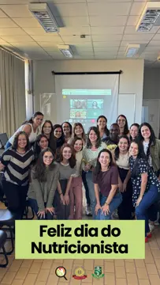
Divulgação científica31 de agosto | Dia do Nutricionista 🍛
🍛 Hoje celebramos os profissionais que dedicam sua carreira a promover saúde e bem-estar por meio da nutrição. No GPENSC, reconhecemos e valorizamos a ciência da nutrição e o papel transformador desses profissionais na sociedade.…
Ler notícia Divulgação científica
Divulgação científica
16º Encontro do FórumCCNTs (@forumccnts)!
)! No dia 09/05, às 09h55, o membro do GPENSC e assessor técnico do Ministério da Saúde, Luiz Menezes Júnior (@luizmenezes_jr), participará do FórumCCNTs com a fala: “Pensando neste ano de Reunião de Alto Nível sobre CCNTs/DCNTs da ONU, em…
Ler notícia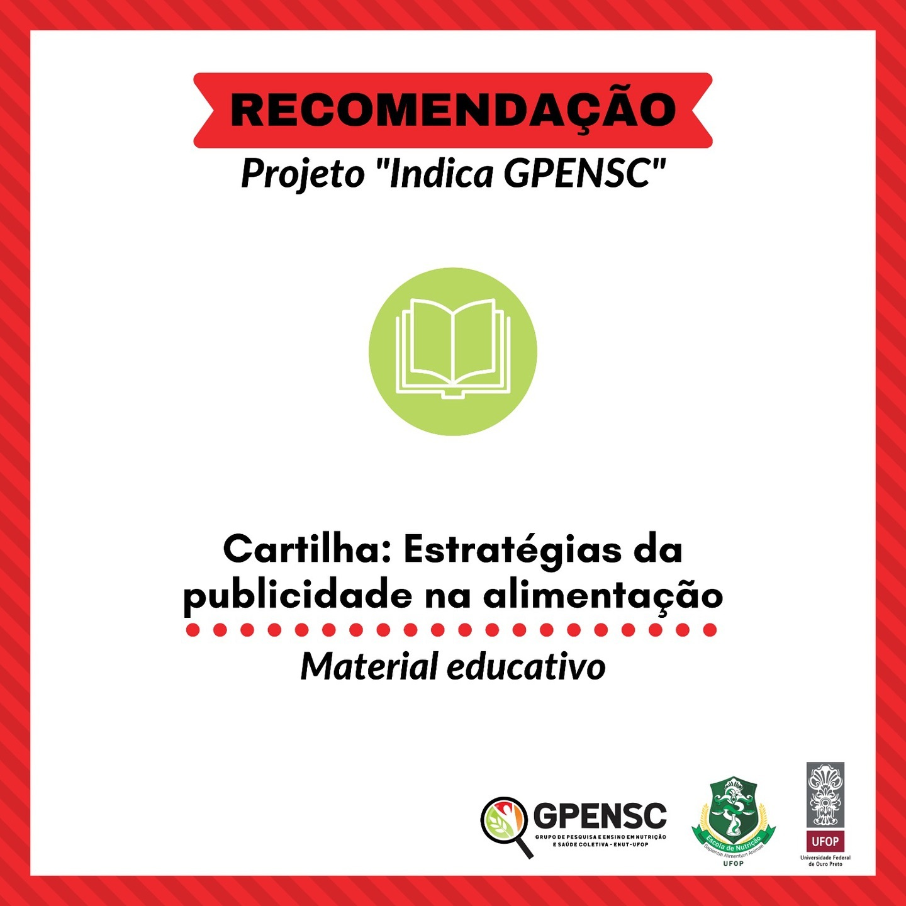
Divulgação científicaCartilha sobre estratégias de publicidade alimentar é divulgada
O GPENSC apresentou a cartilha Estratégias da publicidade na alimentação, elaborada por Tainá Damasceno no âmbito do projeto HipertenSUS.
Ler notícia Divulgação científica
Divulgação científica
Infográfico apresenta tese de Amanda Popolino Diniz
Material de divulgação científica apresenta o tema da tese de Amanda Popolino Diniz sobre consumo de bebidas alcoólicas e a pandemia.
Ler notícia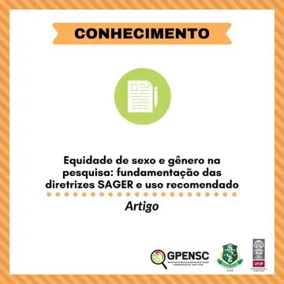
Divulgação científicaDiretrizes SAGER: sexo e gênero na pesquisa científica
Conteúdo explica a importância de considerar sexo e gênero na produção e comunicação de evidências científicas.
Ler notícia Divulgação científica
Divulgação científica
Caminhos para o cuidado em saúde mental
Afinal, quais são as estratégias para cuidar da saúde mental durante a pós-graduação?
Ler notícia Divulgação científica
Divulgação científica
A nova cesta básica e o Guia Alimentar brasileiro
🎯 O conceito de cesta básica alimentar refere-se a um conjunto de alimentos que busca garantir o direito humano à alimentação adequada e saudável, bem como à saúde e ao bem-estar da população. Esse conceito considera como direito humano…
Ler notícia Divulgação científica
Divulgação científica
Compartilha GPENSC: por que aprender outros idiomas?
Conteúdo discute o papel do multilinguismo na comunicação científica e na troca de conhecimentos entre países.
Ler notícia Divulgação científica
Divulgação científica
Infográfico apresenta dissertação de Wanessa Cecília de Oliveira
Material explica o tema de dissertação sobre processamento de alimentos e comportamento sedentário em crianças.
Ler notícia Divulgação científica
Divulgação científica
Infográfico apresenta dissertação de Mariana Cassemira Aparecida Vidigal
O material aborda a dissertação sobre bebidas adoçadas e sintomas de ansiedade, depressão e estresse em estudantes.
Ler notícia Divulgação científica
Divulgação científica
HipertenSUS e o controle da hipertensão na atenção primária
Neste mês de março, foi publicada uma reportagem no site da UFOP (@minhaufop) sobre o projeto “Efetividade de intervenção nutricional para controle da Hipertensão Arterial Sistêmica na Atenção Primária à Saúde” (HipertenSUS)
Ler notícia Divulgação científica
Divulgação científica
GPENSC compartilha material educativo com receitas do projeto ESANP
O grupo divulgou o material Receitas do ESANP: uma coletânea da nossa trajetória juntos, elaborado por pesquisadores do GPENSC e da UFOP.
Ler notícia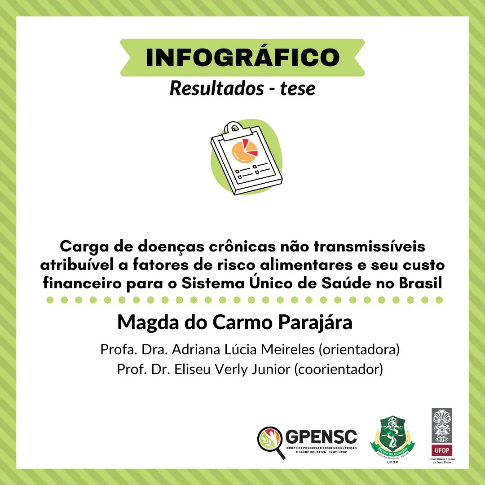
Divulgação científicaInfográficos apresentam tese de doutorado de Magda Parajára
Peças de divulgação científica abordam a carga de doenças crônicas atribuível a fatores alimentares.
Ler notícia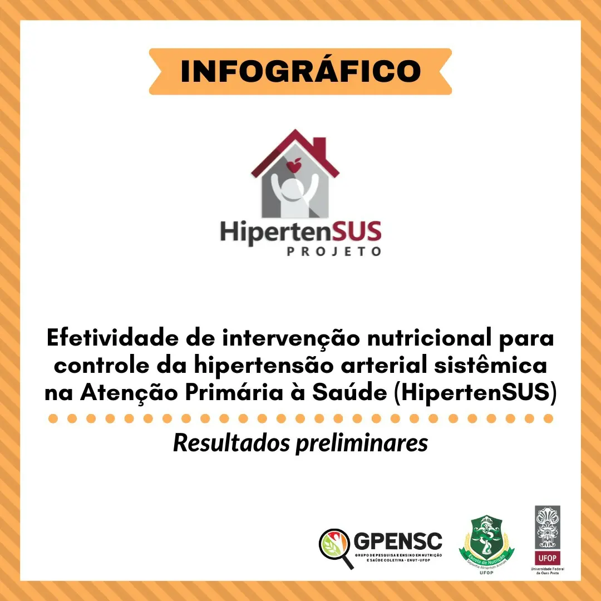
Divulgação científicaInfográfico divulga resultados do projeto HipertenSUS
Material educativo apresenta resultados de estudo sobre intervenção nutricional e hipertensão arterial na Atenção Primária.
Ler notícia Divulgação científica
Divulgação científica
Compartilha GPENSC explica a técnica do mapa falante
Publicação apresenta o mapa falante como técnica participativa de leitura de territórios e fenômenos sociais.
Ler notícia Divulgação científica
Divulgação científica
Compartilha GPENSC aborda benefícios da atividade física
Conteúdo educativo discute atividade física, qualidade de vida e doenças crônicas.
Ler notícia Divulgação científica
Divulgação científica
Infográfico apresenta resultados do projeto PADu
Material produzido por pesquisadoras do GPENSC divulga resultados do projeto sobre ansiedade e depressão em universitários.
Ler notícia Divulgação científica
Divulgação científica
Indica GPENSC recomenda e-book sobre Atenção Primária à Saúde
O GPENSC recomendou livro digital sobre a interação entre população, universidade e serviços na Atenção Primária à Saúde.
Ler notícia Divulgação científica
Divulgação científica
Livro: Alimentos com propriedades funcionais e de saúde: evidências e pretensos efeitos
O GPENSC recomenda o livro “Alimentos com propriedades funcionais e de saúde: evidências e pretensos efeitos”, lançado em 2023
Ler notícia Divulgação científica
Divulgação científica
Roda de conversa sobre organização e fichamento de leituras
". . 🗓️ Nosso encontro será dia 19 de junho (segunda-feira), às 10h00, e contaremos com a participação da professora Dra. Raquel de Deus Mendonça (@raquelmendonca_enut). . 📝 O intuito do encontro é auxiliar sobre como elaborar uma roda da…
Ler notícia Divulgação científica
Divulgação científica
Infográfico apresenta resultados preliminares do PADu
Publicação de divulgação científica apresenta resultados preliminares do projeto sobre ansiedade e depressão em universitários.
Ler notícia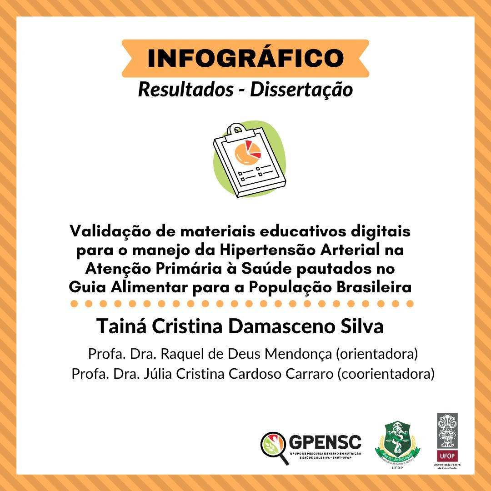
Divulgação científicaInfográfico explica dissertação de Tainá Cristina Damasceno Silva
Publicação aborda validação de materiais educativos digitais para o manejo da hipertensão arterial na Atenção Primária.
Ler notícia Divulgação científica
Divulgação científica
Infográfico explica dissertação de Thaís Calcagno Vidon Bruno
Material aborda pesquisa sobre suporte social, consumo alimentar e ganho de peso em estudantes universitários durante a pandemia.
Ler notícia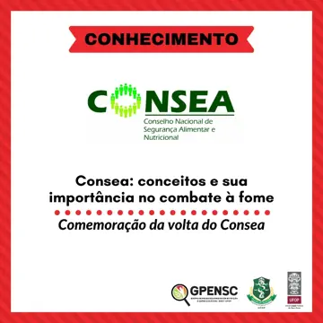
Divulgação científicaO retorno do Conselho Nacional de Segurança Alimentar e Nutricional
🍽 O CONSEA foi criado em 1993 para cumprir com o objetivos de fazer o controle social e abrir espaço para que políticas de saúde pública voltadas para a segurança alimentar e nutricional sejam implementadas e monitoradas.
Ler notícia Divulgação científica
Divulgação científica
Compartilha GPENSC: o que é comer emocional?
Conteúdo educativo explica o comportamento alimentar emocional e sua relação com emoções negativas.
Ler notícia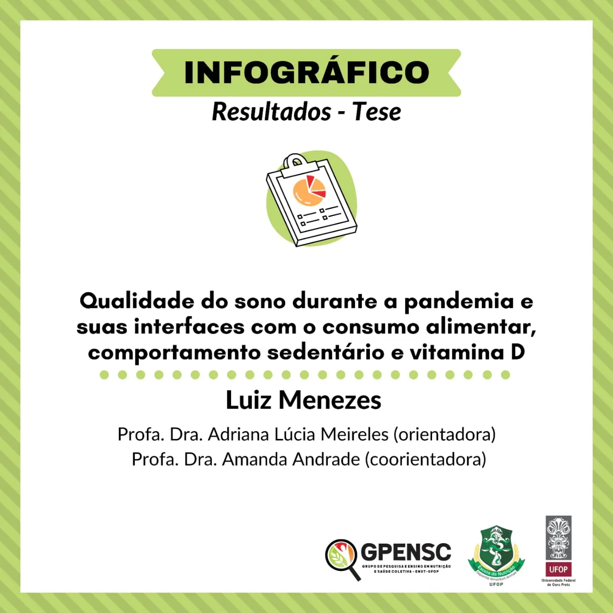
Divulgação científicaInfográficos apresentam tese de doutorado de Luiz Menezes
Publicação divulga estudo sobre qualidade do sono na pandemia e relações com consumo alimentar, comportamento sedentário e vitamina D.
Ler notícia Divulgação científica
Divulgação científica
Plágio e autoplágio: conceitos e cuidados na escrita acadêmica
Conteúdo orienta sobre situações de plágio e autoplágio na produção científica.
Ler notícia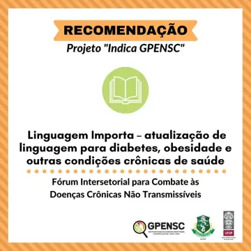
Divulgação científicaLinguagem no cuidado em diabetes e obesidade
📄 Para aqueles em risco de desenvolver ou já diagnosticados com DCNTs, a comunicação adequada, seja ela pessoal ou ao maior número de pessoas, permite a tomada de decisões que possibilitem manter ou melhorar a saúde, principalmente o…
Ler notícia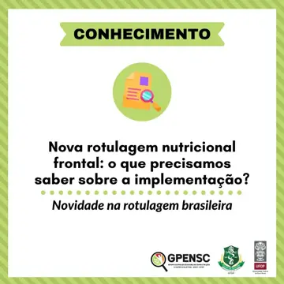
Divulgação científicaO que mudou na rotulagem nutricional
🧾 As novas regras para rotulagem de alimentos trazem modificações na tabela de informação nutricional, além da adoção da rotulagem nutricional frontal. A ideia é facilitar o conhecimento dos consumidores sobre quais alimentos têm…
Ler notícia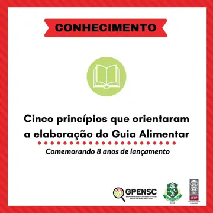
Divulgação científicaOs cinco princípios do Guia Alimentar brasileiro
📝 Os princípios justificam o tratamento abrangente dado à relação entre alimentação e saúde, considerando os nutrientes, alimentos, combinações de alimentos, refeições e dimensões culturais e sociais das práticas alimentares.
Ler notícia Divulgação científica
Divulgação científica
Oito anos do Guia Alimentar para a População Brasileira
📘 O Guia é um documento oficial que tem o intuito de abordar sobre os princípios e as recomendações para uma alimentação adequada e saudável para a população brasileira. Ele apoia as ações de educação alimentar e nutricional nos mais…
Ler notícia Divulgação científica
Divulgação científica
Desmistificando dúvidas sobre alimentação e nutrição
O GPENSC recomenda o material “Desmistificando dúvidas sobre alimentação e nutrição”, lançado em 2016, pela Coordenação-Geral de Alimentação e Nutrição do Ministério da Saúde (CGAN/MS), em parceria com a Universidade Federal de Minas Gerais (@gin.ufmg) e com o apoio da Organização Pan-Americana da Saúde (Opas/Brasil)
Ler notícia Divulgação científica
Divulgação científica
Série apresenta a segunda edição do Guia Alimentar
📘 O Guia Alimentar para a População Brasileira oferece informações confiáveis, baseadas em evidências científicas, sobre as dimensões da alimentação e nutrição, a fim de promover a saúde das famílias, comunidades e da sociedade brasileira…
Ler notícia Divulgação científica
Divulgação científica
Guia de Atividade Física para a População Brasileira
📚 O Guia traz as primeiras recomendações e informações do Ministério da Saúde sobre atividade física para que a população tenha uma vida ativa, promovendo a saúde e a melhoria da qualidade de vida.
Ler notícia Divulgação científica
Divulgação científica
Como escolher gráficos para apresentar resultados científicos
Conteúdo educativo destaca a importância da representação gráfica para interpretação de resultados de pesquisa.
Ler notícia Divulgação científica
Divulgação científica
Glossário sobre as normas do SUS
🔠 De A a V, ou melhor, de “Abordagem Multiprofissional Interdisciplinar” a “Vulnerabilidade”, o glossário conta com 1.808 termos, 2.314 definições e 318 siglas. Todas as definições contêm as fontes normativas correspondentes referenciadas, o…
Ler notícia Divulgação científica
Divulgação científica
Neste mês de abril, a professora Dra
Raquel de Deus Mendonça (@raquelmendonca_enut), uma das coordenadoras do ESANP (Estudo da Segurança Alimentar e Nutricional na Pandemia da COVID-19), concedeu uma entrevista na forma de podcast para a Rádio UFOP (@radioufop) explicando sobre…
Ler notícia Divulgação científica
Divulgação científica
Em apoio ao Guia Alimentar para a População Brasileira!
‼️ Na semana passada, o Ministério da Agricultura, Pecuária e Abastecimento (MAPA) emitiu um ofício acompanhado de uma nota técnica ao Ministério da Saúde solicitando a revisão do Guia Alimentar para a População Brasileira. A principal…
Ler notícia Divulgação científica
Divulgação científica
GPENSC participa do COPGAN e do CONAN
Os integrantes do GPENSC colaboraram na organização dos eventos, mediações de mesas-redondas, avaliação e apresentação de trabalhos.
Ler notíciaEnsino (96)
 Ensino
Ensino
Curso de análise espacial integra ações formativas do GPENSC
O grupo divulgou curso de Análise Espacial Introdutória ministrado por Fernando Luiz Pereira de Oliveira em outubro de 2026.
Ler notícia Ensino
Ensino
Curso sobre bases de dados secundárias é lembrado pelo GPENSC
O grupo divulgou registro do curso sobre uso de bancos de dados secundários em pesquisas, conduzido pela professora Ariene Silva do Carmo.
Ler notícia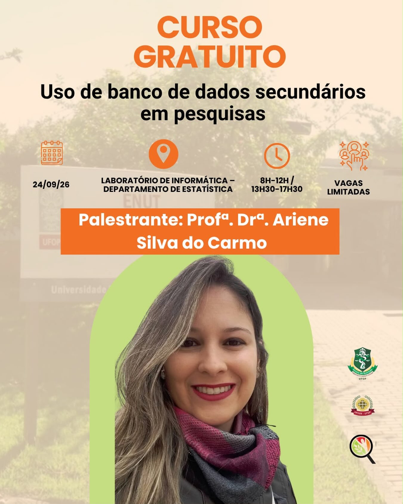
EnsinoCurso sobre bancos de dados secundários em pesquisas em saúde
O curso abordou os sistemas de informação do SUS e inquéritos nacionais de saúde e nutrição, com Ariene Silva do Carmo.
Ler notícia Ensino
Ensino
Sistema alimentar, escolhas e saúde
💭 O estudo qualitativo conduzido por Anabele Pires Santos, Raquel de Deus Mendonça e demais pesquisadoras da Universidade Federal de Ouro Preto (UFOP) e da Universidade Federal de Minas Gerais (UFMG) investigou a percepção de usuários com…
Ler notícia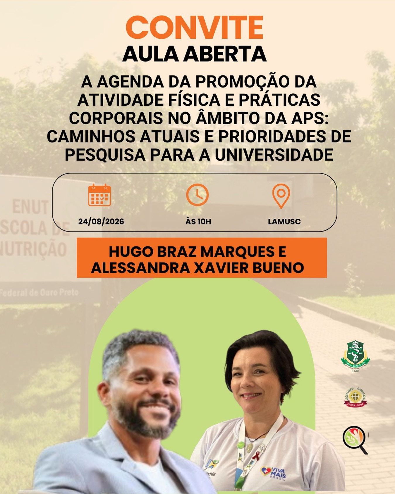
EnsinoAula aberta discute promoção da atividade física na Atenção Primária
O GPENSC promoveu uma aula aberta sobre atividade física e práticas corporais na APS e prioridades de pesquisa.
Ler notíciaProjeto de capacitação promove introdução ao software R
O GPENSC registrou atividades do curso de introdução ao R, relacionadas ao projeto de extensão Capacitação em Epidemiologia e Análise de Dados.
Ler notícia Ensino
Ensino
Barreiras à alimentação saudável entre pessoas com hipertensão
📚Estudo conduzido por Bruna Aparecida Avelar (@brunnaavelar), juntamente com pesquisadores do GPENSC, investigou as barreiras e os facilitadores da alimentação saudável sob a perspectiva de usuários com hipertensão arterial acompanhados na…
Ler notícia Ensino
Ensino
Capacitação aborda interpretação de artigos científicos
O GPENSC divulgou curso de leitura e interpretação de artigos científicos com base na epidemiologia, ministrado por Adriana Lúcia Meireles.
Ler notícia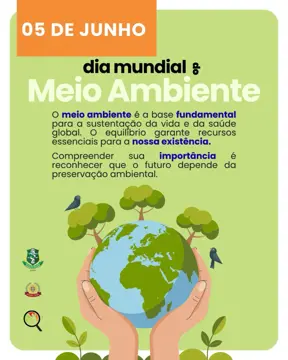
EnsinoAlimentação no Dia Mundial do Meio Ambiente
🍽️🌍 Promover escolhas alimentares mais conscientes é também uma forma de cuidar do planeta e da saúde coletiva. 💚 #diamundialmeioambiente #alimentaçãosustentavel #sustentabilidade
Ler notícia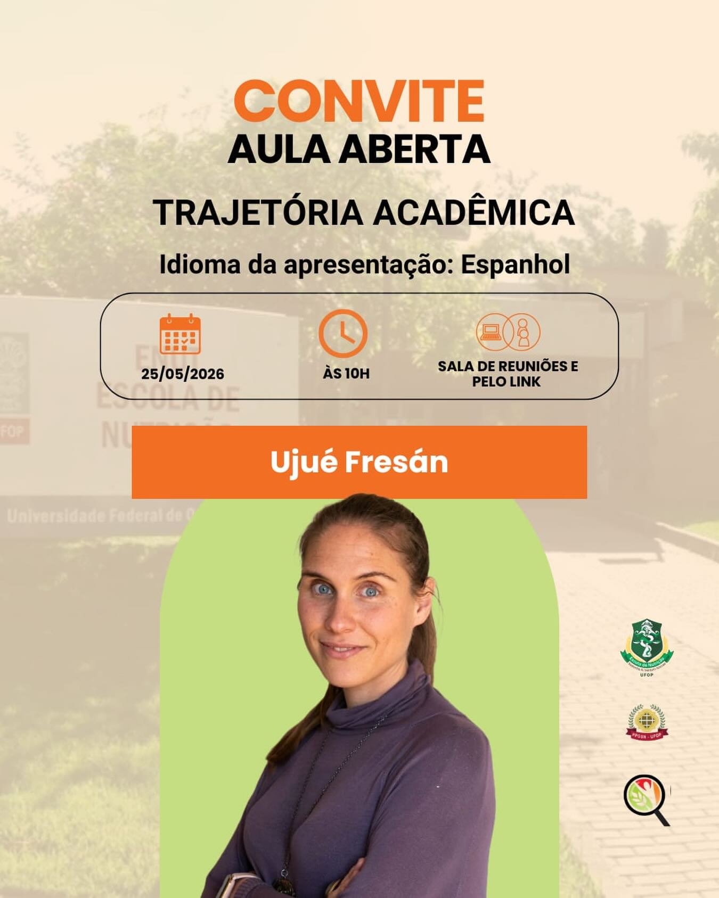
EnsinoAula aberta sobre trajetória acadêmica com Ujué Fresán
A pesquisadora Ujué Fresán participou de uma aula aberta do GPENSC sobre formação e trajetória acadêmica.
Ler notícia Ensino
Ensino
Aula aberta aborda psicologia do comportamento alimentar
O pesquisador David García-Burgos foi convidado para aula aberta sobre psicologia do comportamento alimentar.
Ler notíciaCurso gratuito de introdução ao software R
O GPENSC divulgou formação de introdução à análise de dados no R, ministrada por Emanuel Franklin Passos Simões.
Ler notícia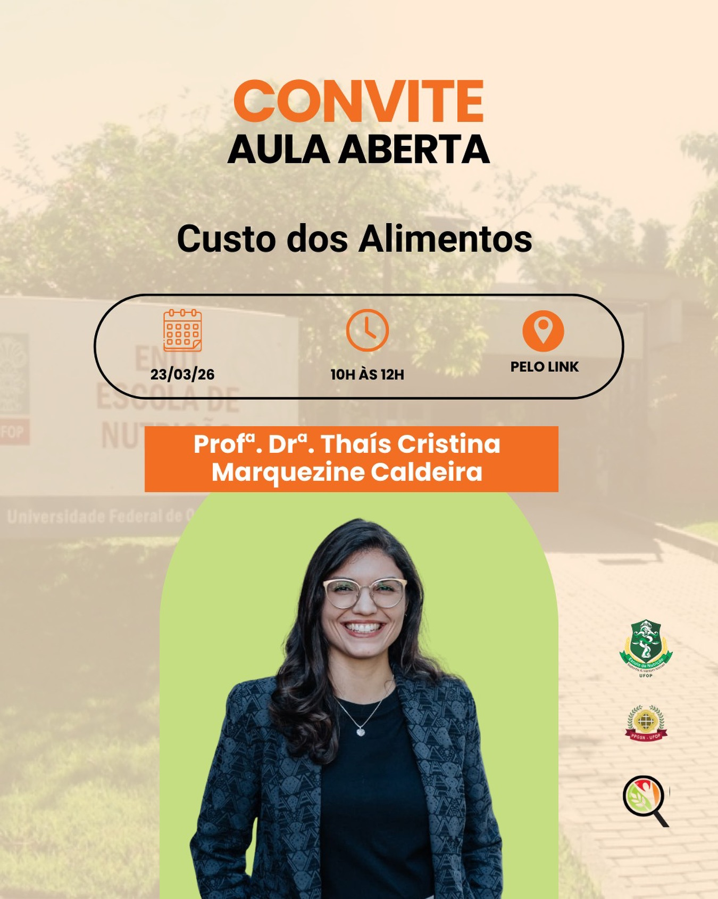
EnsinoAula aberta sobre custo dos alimentos
A pesquisadora Thaís Cristina Marquezine Caldeira participou de aula aberta do GPENSC sobre custo dos alimentos.
Ler notícia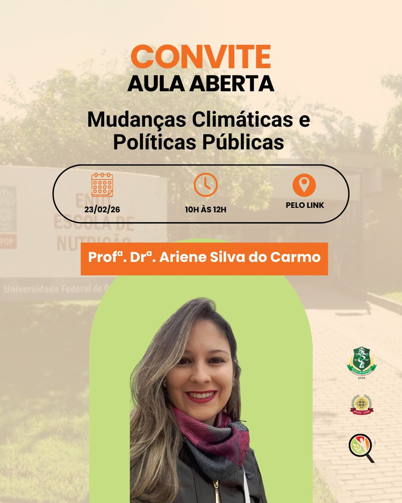
EnsinoAula aberta debate mudanças climáticas e políticas públicas
Encontro formativo do GPENSC tratou das relações entre mudanças climáticas e políticas públicas em fevereiro de 2026.
Ler notícia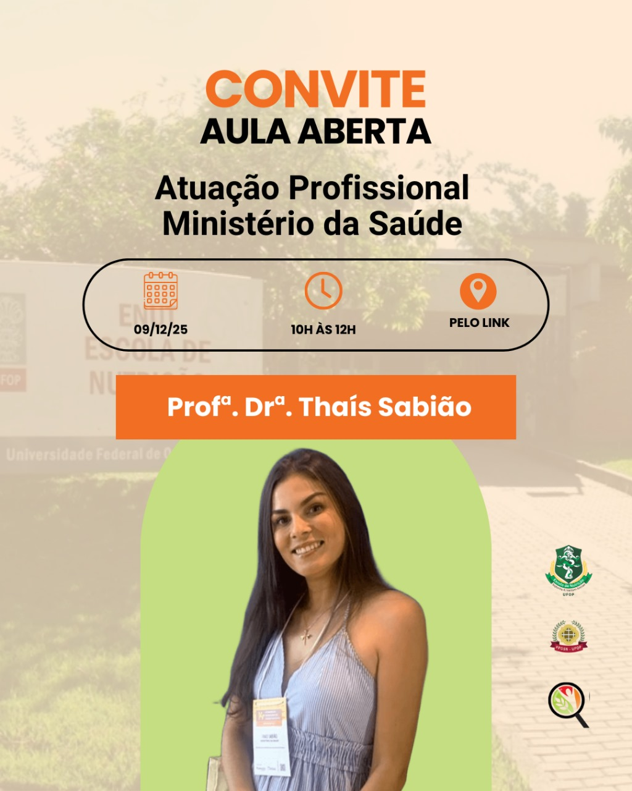
EnsinoAula aberta sobre gestão do cuidado integral no Ministério da Saúde
Thaís Sabião compartilhou sua experiência profissional no Departamento de Gestão do Cuidado Integral do Ministério da Saúde.
Ler notícia Ensino
Ensino
Workshop sobre ferramentas de gestão de referências acadêmicas
O GPENSC promoveu formação sobre organização de referências bibliográficas, com Leonel Martins Braga.
Ler notícia Ensino
Ensino
Aula aberta sobre advocacy e policy brief
O GPENSC divulgou aula aberta sobre advocacy e policy brief com Erika Reis e Hugo Marques, do Ministério da Saúde.
Ler notícia Ensino
Ensino
Que jornada incrível no #GPENSC até agora!
🚀 Entre palestras inspiradoras, trocas de experiências, reencontros especiais e muito aprendizado, cada momento tem sido único. 📸 Aqui vai um pouquinho do que já vivemos até o momento, e ainda tem mais por vir! #gpensc #grupodepesquisa…
Ler notícia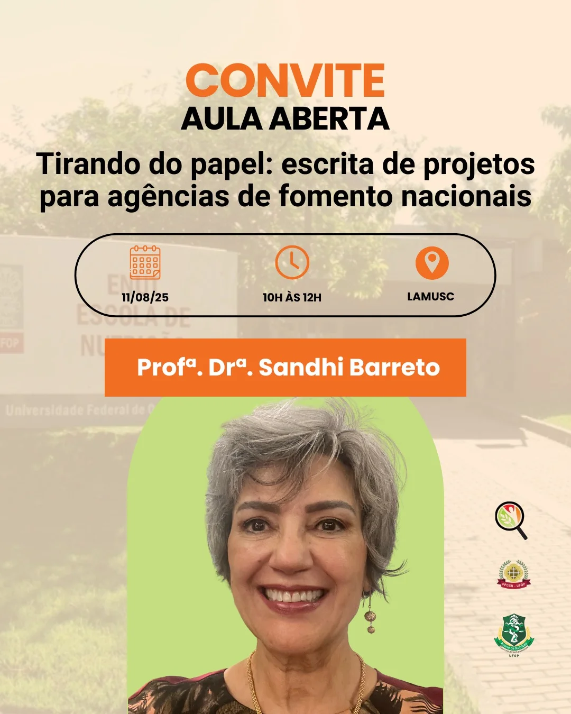
EnsinoAula aberta sobre projetos para agências de fomento
Sandhi Barreto foi convidada para abordar a escrita de projetos destinados a agências de fomento nacionais.
Ler notícia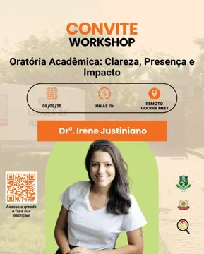
EnsinoQuer aprimorar suas habilidades para apresentações e palestras acadêmicas?
Então não perca nosso workshop sobre oratória acadêmica com a pesquisadora Dra. Irene Justiniano (@irenecsj_).
Ler notícia Ensino
Ensino
Aula aberta IA na prática: prompts e usos básicos
Encontro apresentou aplicações introdutórias de inteligência artificial e elaboração de prompts.
Ler notícia Ensino
Ensino
Aula aberta sobre inteligência artificial e engenharia de prompts
O GPENSC promoveu encontro formativo com Rodrigo Abranches sobre uso de inteligência artificial e prompts.
Ler notícia Ensino
Ensino
Sandhi Barreto discute a revisão de artigos científicos
Para aprofundar essa discussão, o GPENSC convida você para uma palestra imperdível com a Prof.ª Dr.ª Sandhi Barreto
Ler notícia Ensino
Ensino
Workshop Descomplicando Planilhas Eletrônicas
Oficina do GPENSC abordou o uso de planilhas eletrônicas em atividades acadêmicas e profissionais.
Ler notícia Ensino
Ensino
VI Congresso Nacional de Alimentos e Nutrição
⠀ De 26 a 30 de maio de 2025, a Escola de Nutrição da UFOP convida você a participar de um dos mais importantes espaços de diálogo nas áreas de alimentos e nutrição. Com o tema “Cidadania, Saúde e Sustentabilidade”, o CONAN 2025 propõe…
Ler notícia Ensino
Ensino
Você já parou para pensar no impacto ambiental das suas escolhas alimentares?
🌎 Refletir sobre esse tema é essencial para construirmos um futuro mais sustentável e, para aprofundar essa discussão, o GPENSC convida você para uma palestra imperdível com Tania Manjarrés (@taniamanjarresfit). 🗓 Data: 05/05/25 📍 Local:…
Ler notícia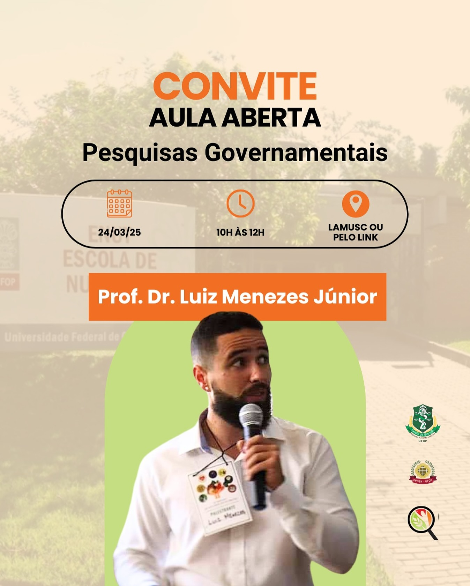
EnsinoPalestra sobre pesquisas governamentais com Luiz Menezes
O pesquisador Luiz Menezes abordou pesquisas governamentais em palestra do GPENSC.
Ler notícia Ensino
Ensino
Perfis sobre pesquisa, ensino e escrita científica
1️⃣ A primeira indicação é o @pesquisanapratica. Nele, vocês terão acesso a dicas de como dominar a escrita científica.
Ler notícia Ensino
Ensino
Jornada acadêmica e profissional sobre os caminhos da pesquisa
👩🏻💻 Nós, do GPENSC, iremos participar do evento ministrando alguns workshops com temas gerais relacionados às linhas de pesquisa do Programa de Pós-Graduação em Saúde e Nutrição - PPGSN (@ppgsn.ufop).
Ler notícia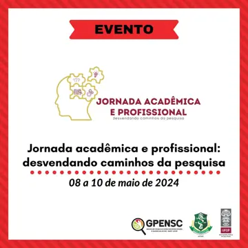
EnsinoPrimeira Jornada Acadêmica e Profissional de pesquisa
🎯 O objetivo do evento é discutir ciência, aperfeiçoar conhecimentos, reconhecer e premiar os trabalhos de excelência produzidos por mestrandos e doutorandos do PPGSN.
Ler notícia Ensino
Ensino
Revoluções tecnológicas e as mudanças sociais
Nos dias 20 e 21 de novembro, vai acontecer a 15ª edição do Encontro de Saberes 2023, realizado pela UFOP (@minhaufop)
Ler notícia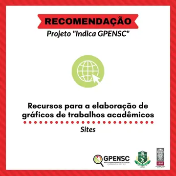
EnsinoFerramentas para elaborar gráficos
📊 Gráficos são como a linguagem universal dos números, pois transformam dados complexos em representações visuais que qualquer pessoa pode entender. Eles nos permitem:
Ler notícia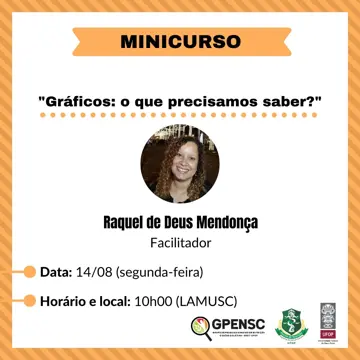
EnsinoGráficos: o que precisamos saber?
É com muita alegria que o GPENSC convida para o minicurso, intitulado “Gráficos: o que precisamos saber?”
Ler notícia Ensino
Ensino
Palestra sobre comportamento alimentar com Júlia Carraro
O GPENSC promoveu palestra sobre comportamento alimentar com a professora Júlia Carraro.
Ler notícia Ensino
Ensino
GPENSC participa da Mostra de Profissões da UFOP
🎯 O objetivo do evento foi apresentar os cursos da universidade por meio de palestras, salas interativas, apresentações culturais e visitas monitoradas a estandes e laboratórios. A última edição do evento, organizado pela Pró-Reitoria de…
Ler notícia Ensino
Ensino
Como elaborar uma pergunta/hipótese de pesquisa?
É com muita alegria que o GPENSC convida para o minicurso, intitulado " Como elaborar uma pergunta/hipótese de pesquisa?"
Ler notícia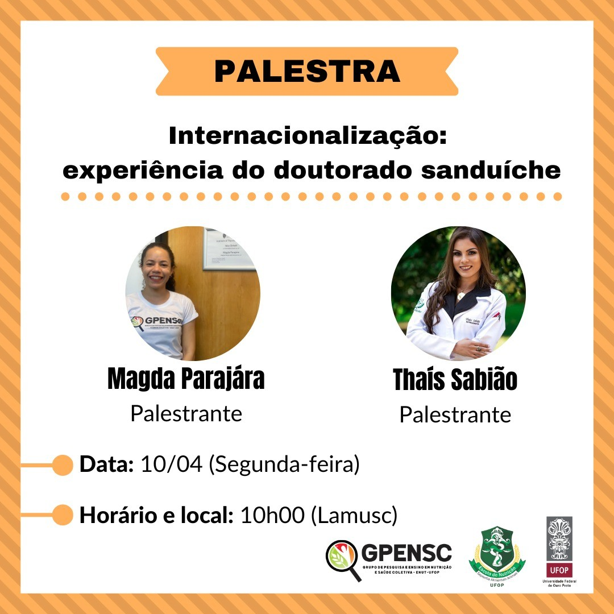
EnsinoPalestra aborda a experiência do doutorado sanduíche
Palestra do GPENSC discute internacionalização acadêmica e experiências de doutorado sanduíche.
Ler notícia Ensino
Ensino
Saúde mental de universitários e uso da internet
O GPENSC apresenta o artigo intitulado "Key characteristics including sex, sexual orientation and internet use associated with worse mental health among university students in Brazil and implications", de autoria da doutoranda Waléria de Paula (@waleria_dp) juntamente com outros pesquisadores da UFOP
Ler notícia Ensino
Ensino
Comportamentos obesogênicos e depressão em universitários
O GPENSC apresenta o artigo intitulado “Age, skin color, self-rated health, and depression associated with co-occurrence of obesogenic behaviors in university students: a cross-sectional study”, de autoria da doutoranda Bruna Carolina Barbosa (@brunabcrb), juntamente com outros pesquisadores do GPENSC e da UFMG
Ler notícia Ensino
Ensino
Saúde e Nutrição Além das Fronteiras
Na próxima semana, entre os dias 03 a 07 de setembro de 2022, vai acontecer a sexta edição do Curso de Integração em Saúde e Nutrição (VI CISeN), com o tema “Saúde e Nutrição Além das Fronteiras” na UFOP
Ler notícia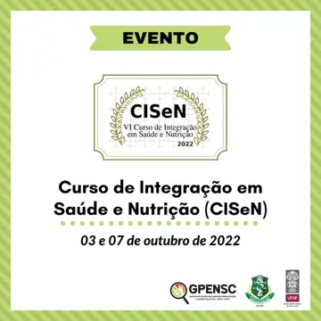
EnsinoVI CISeN: Saúde e Nutrição Além das Fronteiras
A sexta edição do Curso de Integração em Saúde e Nutrição apresentou as linhas de pesquisa e atividades do PPGSN da UFOP.
Ler notícia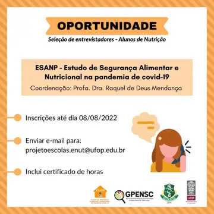
EnsinoESANP - Estudo da Segurança Alimentar e Nutricional na pandemia de covid-19
Estamos com inscrições abertas para vagas de entrevistadores voluntários no estudo "ESANP - Estudo da Segurança Alimentar e Nutricional na pandemia de covid-19"
Ler notícia Ensino
Ensino
Adesão ao acompanhamento nutricional na hipertensão
O GPENSC apresenta as alunas de Iniciação Científica (IC) que estão colaborando no Projeto HipertenSUS e que são membros do GPENSC
Ler notícia Ensino
Ensino
Equipe do GPENSC: pós-doutoranda Anabele Pires Santos
Hoje, é dia de apresentar para vocês mais uma de nossas pesquisadoras, a pós-doutoranda Anabele Pires Santos (@piresanabele)
Ler notícia Ensino
Ensino
Insegurança alimentar nas famílias de escolares
O GPENSC relembra defesa do Trabalho de Conclusão de Curso (TCC) da aluna Mariana Silva Araújo, que aconteceu no dia 04 de novembro de 2021, via Google Meet
Ler notícia Ensino
Ensino
Depois de alguns dias off, estamos de volta com as nossas postagens!
🚀 E para começar o ano com tudo, hoje é dia de #IndicaGPENSC. Ah, especialmente nesse mês de janeiro, preparamos para vocês algumas outras recomendações. Então, fiquem de olho no nosso perfil!
Ler notícia Ensino
Ensino
GPENSC divulga quinta edição do WebCISeN
A quinta edição do Curso de Integração em Saúde e Nutrição divulgou linhas de pesquisa e atividades do PPGSN.
Ler notícia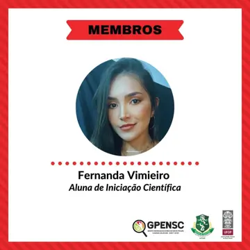
EnsinoIniciação científica no PADu-Multicêntrico
👩🏻🎓 A Fernanda Vimieiro (@fernandavimieiro) é aluna do sétimo e oitavo período de Nutrição da Universidade Federal de Ouro Preto (UFOP), orientada pela professora Dra. Adriana Lúcia Meireles (@dri_meireles) e coorientada pela mestranda…
Ler notícia Ensino
Ensino
III Seminário Latino-Americano de Ambiente Alimentar e Saúde
(@semlaaas). . 🗣️ Nós, do GPENSC, participaremos do III SEMLAAAS. Contaremos com a apresentação da doutoranda Irene Carolina Sousa Justiniano (@irenecsj_) e queremos convidar você que vai participar do evento para conhecer esse trabalho…
Ler notícia Ensino
Ensino
Cursos pré-congresso do EPI2021
Nós, do GPENSC, participaremos de dois cursos pré-congresso.
Ler notícia Ensino
Ensino
Seleção de estudantes para iniciação científica no GPENSC
Dra. Adriana Lúcia Meireles (@dri_meireles).
Ler notícia Ensino
Ensino
Equipe do GPENSC: pós-doutoranda Bárbara Simões
O GPENSC apresenta mais uma pesquisadora do nosso grupo, a pós-doutoranda Bárbara Simões (@barbaradossantossimoes)
Ler notícia Ensino
Ensino
Seminário discute pesquisa e políticas sobre ambiente alimentar
📚 Vocês já ouviram falar a respeito do Seminário Latino-Americano sobre Ambiente Alimentar e Saúde (SEMLAAAS)? O SEMLAAAS (@semlaaas) é um evento técnico-científico que tem como objetivo reunir estudantes, pesquisadores, profissionais,…
Ler notícia Ensino
Ensino
Waléria de Paula participa de aula aberta de epidemiologia
A professora da disciplina de Epidemiologia Nutricional, Adriana Lúcia Meireles (@dri_meireles), convida a todos para participarem da última aula aberta do semestre de 2020/2
Ler notícia Ensino
Ensino
Iniciação científica no projeto COVID-Inconfidentes
Hoje, iremos apresentar para vocês o restante desse time.
Ler notícia Ensino
Ensino
A importância da alimentação para a saúde mental
O GPENSC, em parceria com o PADu (@padufederais) e o PET Nutrição UFOP (@petnutricaoufop), convidam para o VI Webinar PADu, com o tema “A importância da alimentação para a saúde mental”
Ler notícia Ensino
Ensino
Inês Rugani participa de aula aberta de epidemiologia
🗓️ Será dia 24 de junho, de 13:30 às 15:00, com a participação da professora Dra. Inês Rugani.
Ler notícia Ensino
Ensino
Convidados da disciplina de Epidemiologia Nutricional
Durante os meses de junho e julho, a professora Adriana Lúcia Meireles (@dri_meireles) receberá alguns convidados na disciplina de Epidemiologia Nutricional, na qual ela é professora responsável
Ler notícia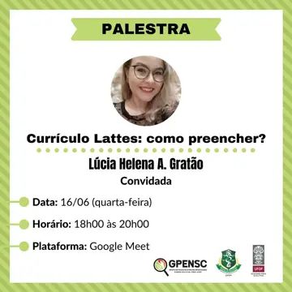
EnsinoCurrículo Lattes: como preencher?
É com grande alegria que anunciamos a nossa primeira palestra de 2021, intitulada “Currículo Lattes: como preencher?”
Ler notícia Ensino
Ensino
Comportamento sedentário de escolares antes e durante a pandemia
O GPENSC apresenta os alunos de Iniciação Científica (ICs) do ESANP (Estudo da Segurança Alimentar e Nutricional na pandemia da COVID-19: situação domiciliar dos alunos de Mariana e Ouro Preto) e membros do GPENSC
Ler notícia Ensino
Ensino
Divulgação do V Congresso Nacional de Alimentos e Nutrição
O GPENSC divulgou o V CONAN, encontro organizado pela Escola de Nutrição da UFOP.
Ler notícia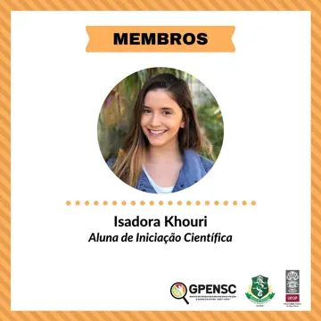
EnsinoEstudantes de iniciação científica do PADu
A Isadora Dantas Sakr Khouri (@isadorasakr) é aluna do oitavo período do curso de Medicina da Universidade Federal de Ouro Preto (UFOP), orientada pela professora Dra. Adriana Lúcia Meireles (@dri_meireles) e coorientada pela mestranda Bruna…
Ler notícia Ensino
Ensino
Custos da alimentação inadequada e do excesso de peso
O GPENSC apresenta os alunos de iniciação científica do projeto “Impactos financeiros e à saúde devidos à alimentação inadequada e ao excesso de peso no Brasil e Unidades Federativas” e membros do GPENSC
Ler notícia Ensino
Ensino
GPENSC oferece seis vagas de iniciação científica
Foram divulgadas três vagas de iniciação científica com bolsa e três para voluntários, destinadas a estudantes de Nutrição da UFOP.
Ler notícia Ensino
Ensino
Alimentação inadequada e custos para a saúde no Brasil
Estamos com inscrições abertas para o preenchimento de vaga para bolsista DTI-CNPq (Desenvolvimento Tecnológico e Industrial-CNPq), no estudo intitulado “Impactos financeiros e à saúde devidos à alimentação inadequada e ao excesso de peso no Brasil e Unidades Federativas”, coordenado pela Profa
Ler notícia Ensino
Ensino
Palestra: Descomplicando a oratória
O GPENSC apresenta o resumo de mais uma de nossas palestras ministradas no primeiro semestre de 2020
Ler notícia Ensino
Ensino
Como preparar apresentações acadêmicas no Canva
🖥️ Você já conhece o Canva? Sabia que podemos fazer apresentações de slides super criativas utilizando esse aplicativo/site? Esse foi o tema da palestra apresentada pela mestranda Bruna (@brunabcrb18 ).
Ler notícia Ensino
Ensino
Elaboração de apresentação científica no Power Point
O post de hoje é sobre o resumo de uma de nossas palestras ministradas no primeiro semestre de 2020
Ler notícia Ensino
Ensino
Como estimar a carga de doenças crônicas
Há alguns dias apresentamos para vocês a pesquisa da Larissa (@lalaguedes_ ).Mas, por que estimar a carga de doenças crônicas não transmissíveis relacionada à dieta com elevado teor de sódio e seu custo financeiro para o Sistema Único de Saúde (SUS)?
Ler notícia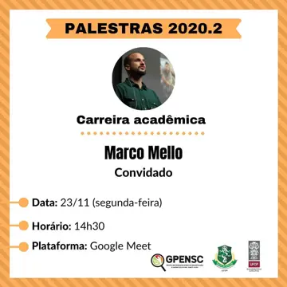
EnsinoPalestra: Carreira acadêmica
Na próxima segunda-feira (23/11), às 14h30, teremos a palestra intitulada “Carreira acadêmica”
Ler notícia Ensino
Ensino
Busca de artigos científicos em bases de dados
Neste post, trouxemos para vocês o resumo de uma de nossas palestras que aconteceu no primeiro semestre de 2020
Ler notícia Ensino
Ensino
Indicadores locais de segurança alimentar na pandemia
A equipe do ESANP – Estudo da Segurança Alimentar e Nutricional na Pandemia da COVID-19: situação domiciliar dos alunos de Mariana e Ouro Preto – em parceria com o GPENSC, convida para o evento online “Segurança alimentar e nutricional em tempos de pandemia: diálogos a partir de indicadores locais”
Ler notícia Ensino
Ensino
Palestra: Comunicação e ciência: uso de infográficos
Na próxima segunda-feira (09/11), às 14h30, teremos a palestra intitulada “Comunicação e ciência: uso de infográficos”
Ler notícia Ensino
Ensino
Palestra de gestão do tempo no GPENSC
Resumo de formação realizada em 2020 com a professora Mariana Carvalho de Menezes sobre gestão do tempo.
Ler notícia Ensino
Ensino
Palestra sobre redação e publicação de artigos científicos
Encontro com Cristianny Miranda discutiu diretrizes práticas para escrever e publicar artigos científicos.
Ler notícia Ensino
Ensino
Cartas de um acadêmico em tempos de recolhimento
Hoje, iremos compartilhar com vocês um projeto muito especial desenvolvido entre os membros do GPENSC, intitulado "Cartas de um acadêmico em tempos de recolhimento"
Ler notícia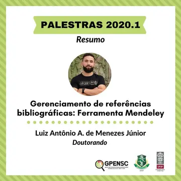
EnsinoGerenciamento de referências bibliográficas: Ferramenta Mendeley
Hoje, trouxemos para vocês o resumo de outro assunto que foi abordado em uma das nossas palestras do primeiro semestre de 2020
Ler notícia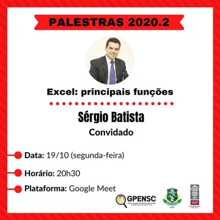
EnsinoPalestra sobre funções do Excel com Sérgio Batista
O GPENSC divulgou palestra formativa sobre as principais funções do Excel, ministrada por Sérgio Batista.
Ler notícia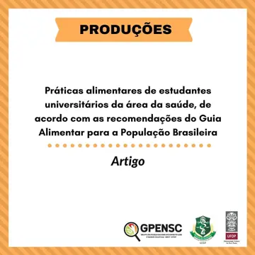
EnsinoPráticas alimentares de universitários da área da saúde
Estão lembrados que na semana passada apresentamos a mestranda Bruna (@brunabcrb18)?
Ler notícia Ensino
Ensino
Nos meses de outubro e novembro, o GPENSC contará com palestras incríveis!
🗓 Confira a nossa programação e não deixe de participar conosco!
Ler notícia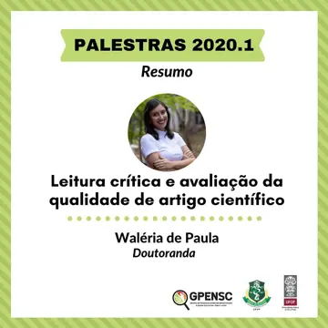
EnsinoLeitura crítica e avaliação da qualidade do artigo científico
Neste post, trouxemos para vocês mais um resumo de uma das nossas palestras ministradas no primeiro semestre de 2020
Ler notícia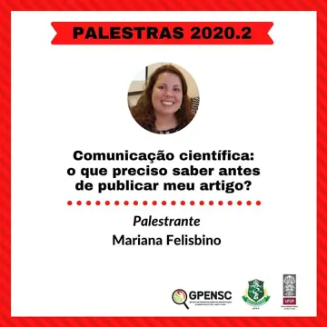
EnsinoPalestra: Comunicação científica: o que preciso saber antes de publicar meu artigo?
Na próxima segunda-feira (28/09) às 14h30min teremos uma palestra intitulada: "Comunicação científica: o que preciso saber antes de publicar meu artigo?"
Ler notícia Ensino
Ensino
Magda Parajára estuda os custos da alimentação inadequada
Mas por que investigar a carga e o custo financeiro das doenças atribuídas ao consumo alimentar inadequado?
Ler notícia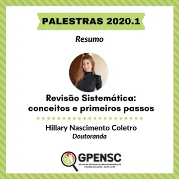
EnsinoRevisão Sistemática: conceitos e primeiros passos
Conhecimento nunca é demais, não é mesmo⁉️
Ler notícia Ensino
Ensino
Roda de conversa sobre ética profissional
Nosso bate papo será na próxima terça-feira (15/09) e contaremos com a participação especial do Luiz Carlos Gomes Júnior, diretor tesoureiro do Conselho Regional de Nutricionistas da 9° Região (CRN9)
Ler notícia Ensino
Ensino
Dados de consumo alimentar na Pesquisa de Orçamentos Familiares
Na próxima quinta-feira (10/09), teremos uma palestra intitulada "Utilização dos dados do Inquérito Nacional de Alimentação da POF (2008/2009 e 2017/2018)"
Ler notícia Ensino
Ensino
Quarta edição do WebCISeN é anunciada em formato on-line
O Curso de Integração em Saúde e Nutrição foi divulgado com atividades on-line e gratuitas.
Ler notícia Ensino
Ensino
Adriana Meireles apresenta ações do GPENSC à UFT
Ela irá falar sobre as atividades desenvolvidas pelo #GPENSC durante a pandemia e as contribuições do nosso grupo para a comunidade científica 👏😍
Ler notícia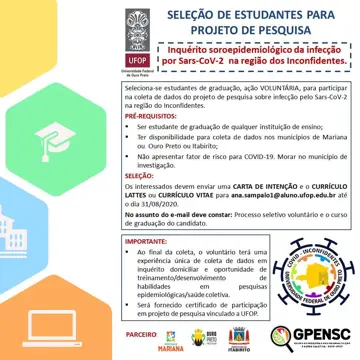
EnsinoSeleção de estudantes para projeto de pesquisa
Experiência única de aprendizado em pesquisa epidemiológica. . 🦠 Dentro de alguns dias, será iniciada a coleta de dados do inquérito domiciliar sobre a COVID-19 na Região dos…
Ler notícia Ensino
Ensino
Bruno Alberto apresenta palestra sobre escrita científica
O link da palestra será publicado na Bio do Instagram. Não perca!
Ler notícia Ensino
Ensino
Palestra: Como revisar artigos para revistas científicas
O GPENSC está de volta com as palestras abertas e preparamos para vocês um semestre repleto de discussões super interessantes!
Ler notícia Ensino
Ensino
ESANP seleciona estudantes de Nutrição para entrevistas
🚨🚨🚨🚨 . Oportunidade de participação em pesquisa com certificado de horas! 😍😍😍😍😍😍 . É isso mesmo! Esse recado é para você que quer ter a experiência de colaborar em um projeto de pesquisa. . Nós do GPENSC, juntamente com a equipe ESANP…
Ler notícia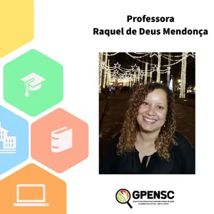
EnsinoO GPENSC apresenta um membro do GPENSC!
😍 Conheçam um pouco mais sobre a Professora Raquel.
Ler notícia Ensino
Ensino
Dia C da Ciência nas escolas
O Dia C da Ciência faz parte de uma mobilização das universidades e institutos federais de todo o Brasil. O tema do ano foi "Bioeconomia: diversidade e riqueza para o desenvolvimento sustentável”. Os estudantes participaram de oficinas sobre…
Ler notícia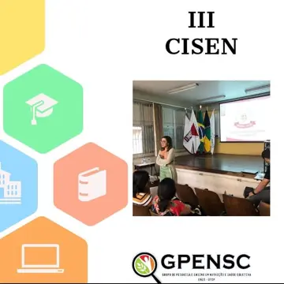
EnsinoCurso de Integração em Saúde e Nutrição na UFOP
Este curso é ofertado todos os anos pelo Programa de Pós-Graduação em Saúde e Nutrição da Universidade Federal de Ouro Preto.
Ler notíciaInternacionalização (4)
 Internacionalização
Internacionalização
Doutoranda compartilha experiência na Universidade do Porto
A doutoranda Tainá Damasceno apresentou sua experiência de doutorado sanduíche na Universidade do Porto, em Portugal.
Ler notícia Internacionalização
Internacionalização
Pesquisadora do GPENSC realiza missão científica em Granada
A professora Júlia Cristina Cardoso Carraro realizou missão científica na Universidad de Granada, na Espanha, em março de 2026.
Ler notícia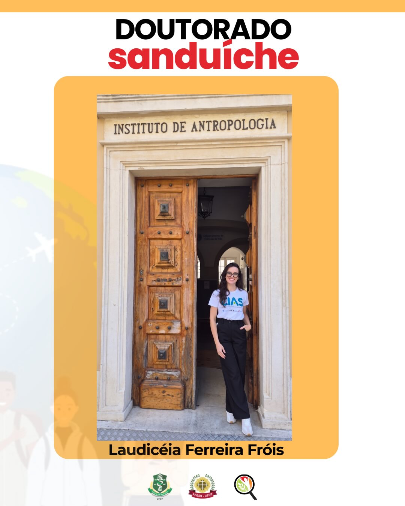
InternacionalizaçãoDoutoranda do GPENSC inicia período de pesquisa na Universidade de Coimbra
Laudicéia Ferreira Fróis iniciou doutorado sanduíche no Centro de Investigação em Antropologia e Saúde da Universidade de Coimbra, em Portugal.
Ler notícia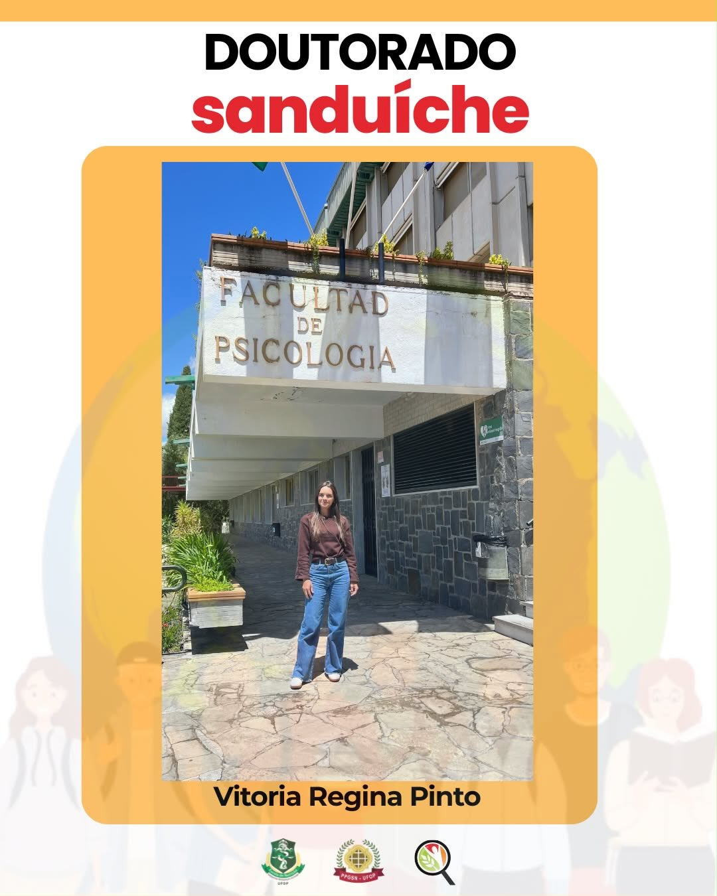
InternacionalizaçãoDoutoranda do GPENSC desenvolve atividades na Universidad de Granada
Vitória Regina Pinto iniciou período de doutorado sanduíche na Universidad de Granada, na Espanha.
Ler notíciaPesquisa (296)
 Pesquisa
Pesquisa
Estudo avalia adaptações do Escore de Framingham para pesquisas populacionais
Pesquisa com dados de 6.555 brasileiros avaliou versões do escore de risco cardiovascular com informações autorreferidas e encontrou boa concordância com a versão original.
Ler notícia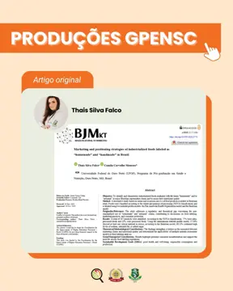
PesquisaVocê tem o hábito de observar ou comprar alimentos com os termos caseiro e artesanal?
Um estudo conduzido por Thais Falco (@thafalco), em colaboração com pesquisadores do GPENSC, teve como objetivo identificar e caracterizar alimentos industrializados comercializados com os termos “caseiro” e/ou “artesanal” nas principais…
Ler notícia Pesquisa
Pesquisa
Nayara Resende Gomes realiza qualificação no GPENSC
Nayara Resende Gomes apresentou seu trabalho de qualificação em outubro de 2026, orientada por Camila Carvalho Menezes.
Ler notícia Pesquisa
Pesquisa
🍎 ALIMENTAÇÃO E QUALIDADE DE VIDA NA UNIVERSIDADE
Você sabia que a qualidade da alimentação pode estar associada à qualidade de vida de estudantes universitários?
Ler notícia Pesquisa
Pesquisa
Projeto de alimentação e nutrição na APS recebe aprovação no edital da FAPEMIG
Projeto coordenado por Ariene Silva do Carmo foi aprovado no edital Demanda Universal FAPEMIG 2026, categoria B, para investigar ações de alimentação e nutrição na Atenção Primária à Saúde.
Ler notícia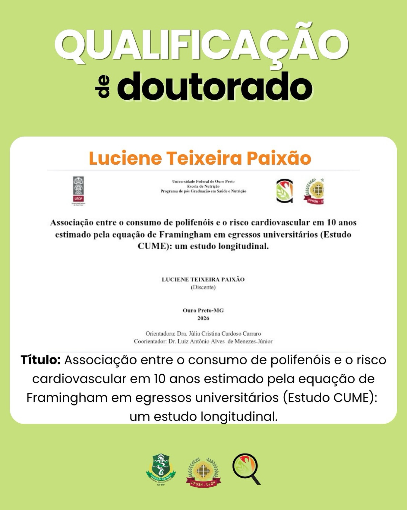
PesquisaQualificação de doutorado de Luciene no GPENSC
Luciene realizou qualificação de doutorado em agosto de 2026, orientada por Júlia Cristina Cardoso Carraro.
Ler notícia Pesquisa
Pesquisa
Conheça mais uma pesquisadora do GPENSC, a Dra. Bruna Barbosa (@brunabcrb).
). Nutricionista formada pela Universidade Federal de Ouro Preto (UFOP), mestre e doutora em Saúde e Nutrição pelo Programa de Pós-Graduação em Saúde e Nutrição (PPGSN/UFOP). Pesquisadora do Grupo de Pesquisa e Ensino em Nutrição e Saúde…
Ler notícia Pesquisa
Pesquisa
GPENSC apresenta pesquisa NutricionalMente sobre comportamento alimentar
O projeto NutricionalMente busca compreender dimensões do comportamento alimentar e contribuir para estratégias de promoção da saúde e manejo da obesidade.
Ler notícia Pesquisa
Pesquisa
Mariana Cassemira Aparecida Vidigal realiza qualificação
Mariana Cassemira Aparecida Vidigal apresentou sua qualificação em julho de 2026, orientada por Adriana Lúcia Meireles.
Ler notícia Pesquisa
Pesquisa
O que os motivos das escolhas alimentares têm a ver com o desejo por alimentos?
Um estudo conduzido pela doutoranda Ana Cláudia Morito Neves (@anaclaudiamorito), em parceria com pesquisadores do GPENSC (@gpenscufop) e sob orientação da Profª Drª Júlia Cristina Cardoso Carraro (@julia_carraro), investigou a associação…
Ler notícia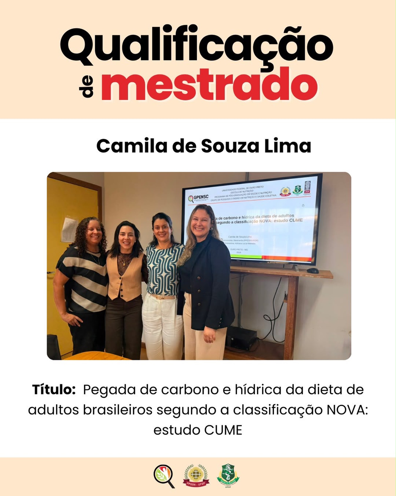
PesquisaQualificação de mestrado de Camila de Souza Lima
Camila de Souza Lima realizou sua qualificação de mestrado em julho de 2026, sob orientação de Adriana Lúcia Meireles.
Ler notícia Pesquisa
Pesquisa
Quem são os alimentos comercializados com o termo fit no Brasil?
🔍 O estudo realizado por Thamara de Cássia Carneiro (@thamara_f), Dra. Bruna Eugênia Ferreira Mota (@bruna.emota), doutoranda Francine Rubim de Resende (@francinerubimnutri), Dra. Raquel de Deus Mendonça (@raquelmendoca_enut) e Dra. Camila…
Ler notícia Pesquisa
Pesquisa
Conheça mais uma integrante do GPENSC!
Apresentamos Isis de Carvalho Rodrigues (@isiscro), graduanda de nutrição da Universidade Federal de Ouro Preeto (UFOP).
Ler notícia Pesquisa
Pesquisa
📢 𝗦𝗲𝗹𝗲𝗰̧𝗮̃𝗼 𝗣𝗣𝗚𝗦𝗡/𝗨𝗙𝗢𝗣 𝟮𝟬𝟮𝟳 𝗮𝗯𝗲𝗿𝘁𝗮!
O Programa de Pós-Graduação em Saúde e Nutrição da UFOP está com inscrições abertas para:
Ler notícia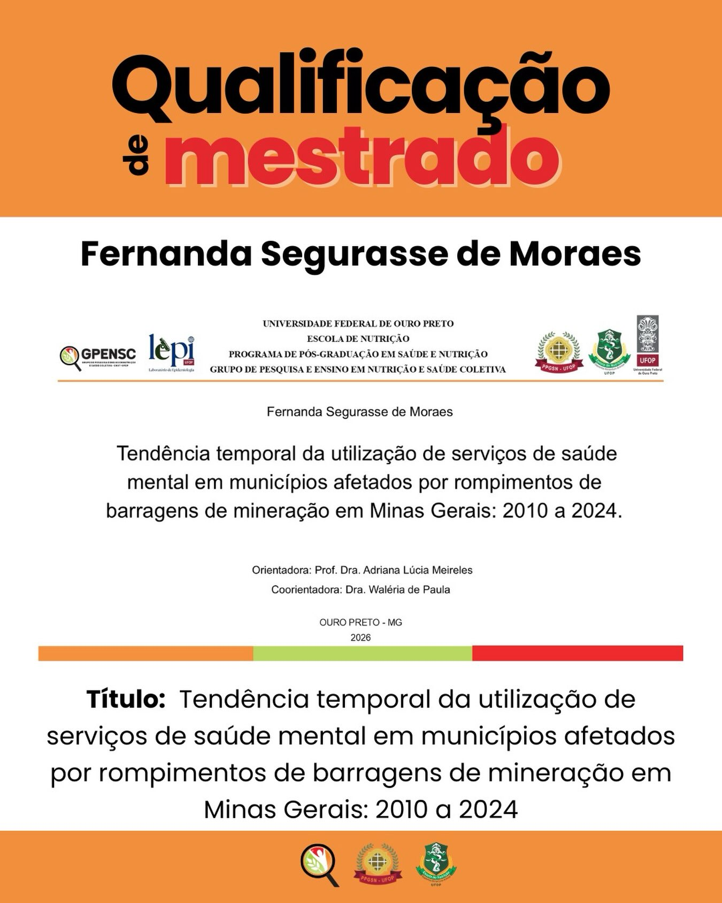
PesquisaQualificação de mestrado de Fernanda Segurasse de Moraes
Fernanda Segurasse de Moraes realizou qualificação de mestrado em julho de 2026, sob orientação de Adriana Lúcia Meireles.
Ler notícia Pesquisa
Pesquisa
Júlia Carraro recebe bolsa de produtividade
Essa bolsa tem como objetivo reconhecer e valorizar pesquisadores com produção científica relevante, além de incentivar cada vez mais o avanço da ciência no Brasil.
Ler notícia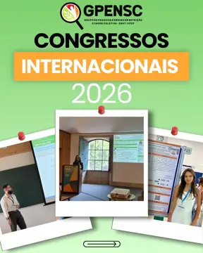
Pesquisa🌍 O GPENSC marcando presença pelo mundo!
Arraste para o lado para conferir um pouquinho de como foi essa jornada de troca de conhecimentos e apresentações de trabalhos em importantes eventos científicos! ➡️🎓🚀
Ler notícia Pesquisa
Pesquisa
✨ Conheça mais uma integrante do GPENSC!
Apresentamos Lorena Pinto Andrade (@lorenaandradenutricionista), nutricionista, mestre em Ciência dos Alimentos pela Universidade Federal de Lavras (UFLA) e, atualmente, doutoranda em Saúde e Nutrição pela Universidade Federal de Ouro Preto…
Ler notícia Pesquisa
Pesquisa
Sono, ansiedade e percepção da própria saúde
Um estudo conduzido pelo Prof°. Dr. Luiz Menezes-Júnior (@luizmenezes_jr), em parceria com pesquisadores do GPENSC (@gpenscufop), investigou a associação entre a qualidade do sono e a autopercepção de saúde, além do papel da ansiedade e da…
Ler notícia Pesquisa
Pesquisa
Homenagem a quem faz ciência
Parabéns a todos os pesquisadores pelo Dia Nacional do Pesquisador Científico! 💙
Ler notícia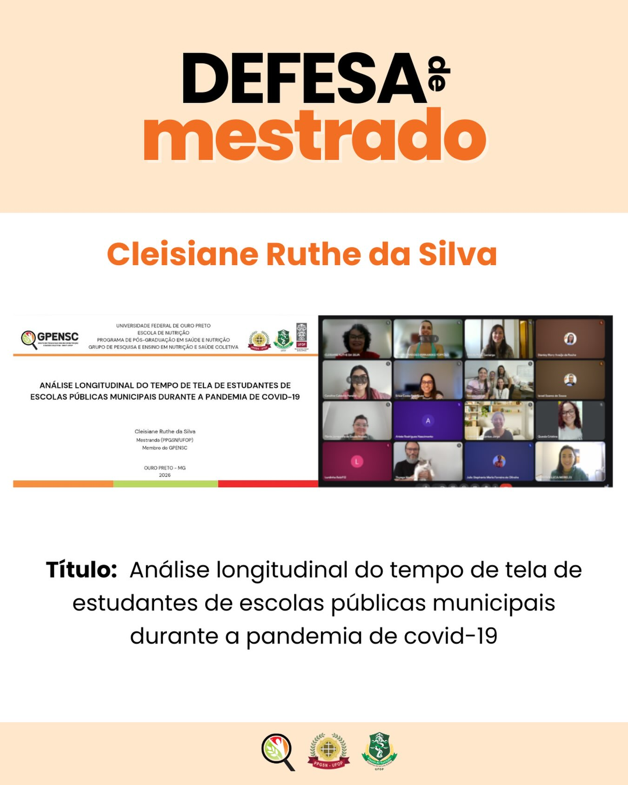
PesquisaDefesa de mestrado de Cleisiane no GPENSC
Cleisiane defendeu seu mestrado em junho de 2026, com orientação de Adriana Lúcia Meireles e coorientação de Érica Costa Rodrigues.
Ler notícia Pesquisa
Pesquisa
Pesquisa de pós-doutorado de Ariene Silva do Carmo
O estudo utilizou dados do Caeb (Comercialização de Alimentos em Escolas Brasileiras) e teve como objetivo analisar os preços e as estratégias de promoção comercial de alimentos vendidos em cantinas de escolas particulares brasileiras,…
Ler notícia Pesquisa
Pesquisa
Ganepão reúne pesquisadores em São Paulo
A membra do GPENSC Cleisiane (@cleisi0102), participou do evento e apresentou o trabalho intitulado “Adesão às recomendações de tempo de tela entre crianças e adolescentes: um estudo longitudinal”.
Ler notícia Pesquisa
Pesquisa
UFOP EXPLICA - ALIMENTAÇÃO SUSTENTÁVEL/ ALIMENTACIÓN SOSTENIBLE
Alimentação sustentável é um modelo de dieta que promove a saúde humana ao mesmo tempo em que respeita o meio ambiente. Ela se baseia em alimentos de origem vegetal, produzidos localmente e com baixo impacto ambiental. Ujué Fresán,…
Ler notícia Pesquisa
Pesquisa
Vitamina D, genética e depressão
Estudo conduzido por Thaís da Silva Sabião (@thasabiao), juntamente com outros pesquisadores do GPENSC, investigou a interação entre polimorfismos em genes da via metabólica da vitamina D, os níveis séricos dessa vitamina e a presença de…
Ler notícia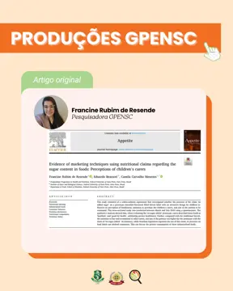
PesquisaComo a alegação “sem adição de açúcar” influencia a escolha
O estudo realizado por Francine Rubim de Resende (@fracinerubimnutri), coorientada pelo Dr. Eduardo Beazorte e orientada pela Dra. Camila Carvalho Meneses investigaram exatamente isso.
Ler notícia Pesquisa
Pesquisa
Sintomas de ansiedade entre universitários brasileiros
📚💻 Estudo conduzido por Bruna Carolina Rafael Barbosa (@brunabcrb,) juntamente com outros pesquisadores do GPENSC, investigou a saúde mental de estudantes universitários de diferentes regiões do Brasil durante a suspensão das aulas…
Ler notícia Pesquisa
Pesquisa
Qualificação de doutorado de Miriam
Miriam realizou qualificação de doutorado em abril de 2026, sob orientação de Raquel de Deus Mendonça.
Ler notícia Pesquisa
Pesquisa
GPENSC participa de três congressos internacionais
🌎 Nossa pesquisadora @laudiceia_frois participará, nos dias 28 e 29 de maio, do XXV Congresso de Nutrição e Alimentação (@apnutricao), em Porto, Portugal. Nosso pesquisador @luizmenezes_jr estará presente no REDIMED Omics Symposium 2026 &…
Ler notícia Pesquisa
Pesquisa
Qualificação de mestrado de Leidiane
Leidiane realizou qualificação de mestrado em maio de 2026, orientada por Luiz Menezes-Júnior.
Ler notícia Pesquisa
Pesquisa
GPENSC participa do CONBRAN 2026
O grupo registrou sua participação no Congresso Brasileiro de Nutrição de 2026, com intercâmbio científico e divulgação de pesquisas.
Ler notícia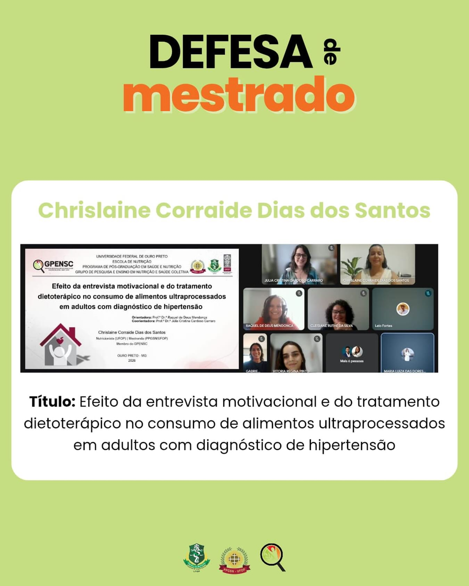
PesquisaDefesa de mestrado de Chrislaine no GPENSC
Chrislaine defendeu seu mestrado em fevereiro de 2026, com orientação de Raquel de Deus Mendonça.
Ler notícia Pesquisa
Pesquisa
UFOP exibe o documentário Comida de Mentira
)! 🎬 Sobre o filme: O documentário apresenta, de forma acessível e provocadora, como a indústria dos ultraprocessados influencia os hábitos alimentares, impacta a saúde da população, o meio ambiente e as políticas de alimentação no Brasil.…
Ler notícia Pesquisa
Pesquisa
✨ Conheça mais um integrante do GPENSC!
Apresentamos Nayara Resende Gomes (@nayararesendeg), nutricionista e mestre pela Universidade Federal de Ouro Preto (UFOP).
Ler notícia🌍✨ Internacionalização, ciência e sustentabilidade caminhando juntas!
🌱 O GPENSC tem a honra de receber a Drª. Ujué Fresán (@ujuefresan), pesquisadora do programa Sustainability in Biosystems do Institute of Research and Technology in Agro-Food - IRTA, Barcelona, Espanha (@irtacat) 🇪🇸 Com ampla experiência em…
Ler notícia Pesquisa
Pesquisa
XXIX Congresso Brasileiro de Nutrição
O GPENSC estará presente com a apresentação de trabalhos que refletem nossas principais linhas de pesquisa.
Ler notícia Pesquisa
Pesquisa
Projeto investiga impactos ambientais das embalagens de bebidas
O GPENSC divulgou pesquisa sobre os impactos ambientais associados às embalagens de alimentos e bebidas.
Ler notícia Pesquisa
Pesquisa
Estudo do GPENSC é publicado na revista Nutrition
O GPENSC divulgou artigo na revista Nutrition que avaliou intervenções nutricionais e entrevista motivacional e sua relação com proteína C-reativa em pessoas com hipertensão.
Ler notícia Pesquisa
Pesquisa
✨ Conheça mais um integrante do GPENSC!
Apresentamos João Lucas Araújo Rocha (@joaolucaaraujo), graduando em estatística pela Universidade Federal de Ouro Preto (UFOP).
Ler notícia Pesquisa
Pesquisa
Defesa de mestrado de Lais Fernanda
Lais Fernanda defendeu seu mestrado em fevereiro de 2026, orientada por Raquel de Deus Mendonça.
Ler notícia Pesquisa
Pesquisa
Defesa de mestrado de Edna no GPENSC
Edna realizou sua defesa de mestrado em fevereiro de 2026, com orientação de Adriana Lúcia Meireles.
Ler notícia Pesquisa
Pesquisa
✨ Conheça mais um integrante do GPENSC!
Apresentamos João Victor Monsores Barbosa (@joao21monsores), nutricionista formado pela Universidade Federal de Ouro Preto (UFOP).
Ler notícia Pesquisa
Pesquisa
Dia Mundial da Atividade Física!
A prática regular de atividade física contribui diretamente para a saúde física e mental, auxiliando na prevenção de doenças e na melhora da qualidade de vida. 🏃♂️💪
Ler notícia Pesquisa
Pesquisa
✨ Conheça mais uma integrante do GPENSC!
Apresentamos Leidiane Rafaela Fernandes de Oliveira (@olliveiraleidiane), nutricionista formada pela Universidade Federal de Ouro Preto (UFOP).
Ler notícia✨ Conheça mais uma integrante do GPENSC!
Apresentamos Francine Rubim de Resende (@francinerubimnutri), nutricionista formada pela UniFaminas.
Ler notícia✨ Conheça mais um integrante do GPENSC!
Apresentamos Daiane Aparecida Nogueira (@daiane.nogueira14), nutricionista formada pela Universidade Federal de Uberlândia (UFU).
Ler notícia Pesquisa
Pesquisa
Camila Carvalho Menezes e a liderança do GPENSC
Professora do Departamento de Alimentos da Escola de Nutrição da Universidade Federal de Ouro Preto (DEALI/ENUT/UFOP). Doutora e mestre em Ciência de Alimentos pela Universidade Federal de Lavras (UFLA) e Nutricionista pela UFOP.
Ler notíciaConheça a Profa. Dra. Ariene Silva do Carmo (@ariene.carmo), uma das líderes do GPENSC!
Professora do Departamento de Nutrição Clínica e Social da Escola de Nutrição da Universidade Federal de Ouro Preto (DENCS/ENUT/UFOP). Nutricionista e Mestre em Saúde e Enfermagem (UFMG). Doutora em Ciências da Saúde na área de concentração…
Ler notícia Pesquisa
Pesquisa
Momentos GPENSC | Defesa ✨
No dia 03 de fevereiro de 2026 tivemos mais uma defesa no nosso grupo de pesquisa! 🎓
Ler notícia Pesquisa
Pesquisa
Retrospectiva do GPENSC em 2025
Entre projetos, encontros e descobertas, seguimos construindo conhecimento de forma coletiva, fortalecendo parcerias e reafirmando o valor de uma pesquisa feita com compromisso e afeto.
Ler notícia#TBT do Encontro de Saberes!
Hoje lembramos com orgulho a participação dos membros do GPENSC, que apresentaram trabalhos e compartilharam conhecimento com a comunidade acadêmica no Encontro de Saberes.
Ler notícia Pesquisa
Pesquisa
Momentos GPENSC | Defesa
No dia 24 de outubro de 2025, aconteceu mais uma defesa no nosso grupo de pesquisa!
Ler notícia Pesquisa
Pesquisa
HipertenSUS investiga percepção de usuários sobre acompanhamento nutricional
Pesquisa do HipertenSUS analisou experiências de usuários da Atenção Primária após acompanhamento nutricional individual.
Ler notícia Pesquisa
Pesquisa
📢Inscrições Abertas para o PPGSN/UFOP 2026!
O Programa de Pós-Graduação em Saúde e Nutrição (PPGSN/UFOP) @ppgsn.ufop está com inscrições abertas para o processo seletivo de Mestrado e Doutorado Acadêmico para ingresso no primeiro semestre de 2026.
Ler notícia Pesquisa
Pesquisa
Atividade física e substituição do tempo sedentário
Substituir o tempo de comportamento sedentário por atividade física pode reduzir a chance de sintomas de ansiedade e depressão!
Ler notícia Pesquisa
Pesquisa
Estudo ESANP analisa disponibilidade de alimentos durante a pandemia
Pesquisa longitudinal ESANP investigou mudanças na disponibilidade alimentar dos domicílios entre 2020 e 2022.
Ler notíciaAdriana Meireles recebe bolsa de produtividade do CNPq
Essa bolsa tem como objetivo reconhecer e valorizar pesquisadores com produção científica relevante, além de incentivar cada vez mais o avanço da ciência no Brasil.
Ler notícia Pesquisa
Pesquisa
Conheça mais uma integrante do GPENSC!
Melissa Ionara Ribeiro Sabbagh é nutricionista formada pela Universidade Federal de Juiz de Fora (UFJF), mestre em Ciências da Nutrição pela Universidade Federal dos Vales do Jequitinhonha e Mucuri (UFVJM). Atualmente, é doutoranda no…
Ler notícia Pesquisa
Pesquisa
Conheça mais uma pesquisadora do GPENSC, a Dra. Samara Moura (@mourasamara).
). A linha de pesquisa da Samara busca compreender como o comportamento sedentário e a (in)atividade física se associam com o consumo alimentar, a má qualidade do sono e indicadores de saúde mental, contribuindo para o entendimento de suas…
Ler notícia Pesquisa
Pesquisa
Com alegria, apresentamos mais uma integrante do GPENSC!
Fernanda Segurasse de Moraes (@fernanda.segurasse) é farmacêutica formada pela Universidade Federal de Ouro Preto (UFOP). Atualmente, é mestranda no Programa de Pós-Graduação em Saúde e Nutrição da UFOP (@ppgsn.ufop), na linha de pesquisa…
Ler notícia Pesquisa
Pesquisa
Tempo de tela de estudantes durante a suspensão das aulas
Estudo conduzido por Érica Costa Rodrigues (@costta.erica ) juntamente com outros pesquisadores do GPENSC, buscou entender como o tempo de tela de estudantes de escolas públicas de Mariana e Ouro Preto mudou antes e durante a suspensão das…
Ler notícia Pesquisa
Pesquisa
Com alegria, apresentamos mais uma integrante do GPENSC!
Miriam Aparecida de Assis Silva (@miriamaasilva) é nutricionista e mestre em Saúde e Nutrição pela Universidade Federal de Ouro Preto (UFOP).
Ler notícia Pesquisa
Pesquisa
Conheça o pesquisador do GPENSC, Dr. Luiz Menezes (@luizmenezes_jr).
). As pesquisa do Luiz tem como foco epidemiologia nutricional, cronobiologia e distúrbios relacionados ao sono. Continue acompanhando nosso perfil e fique por dentro dos projetos desenvolvidos pelo Luiz!
Ler notíciaAlimentação de crianças e adolescentes na pandemia
Estudo conduzido por Priscila Pena Camargo (@priscilapenacamargo) juntamente com outros pesquisadores do GPENSC, para investigar como o contexto da pandemia de COVID-19 agravou a insegurança alimentar, especialmente entre as populações mais…
Ler notícia Pesquisa
Pesquisa
🔬 08 de Julho | Dia Nacional da Ciência e do Pesquisador
Hoje celebramos quem dedica sua vida à produção de conhecimento que transforma o mundo.
Ler notícia Pesquisa
Pesquisa
Apresentamos com alegria mais um membro do GPENSC!
Tania Manjarrés Rodríguez (@taniamanjarresfit) é bióloga pela Universidad Pedagógica y Tecnológica da Colômbia. É mestre em Conservação e Uso da Biodiversidade pela Pontificia Universidad Javeriana de Bogotá. Especialista em Nutrição…
Ler notícia📞 Vigitel 2025 já começou!
Você pode ser uma das pessoas sorteadas para responder à pesquisa por telefone.
Ler notícia Pesquisa
Pesquisa
✨ Momentos GPENSC | Qualificações ✨
O GPENSC se orgulha de acompanhar e celebrar cada etapa da trajetória de seus membros! 🎓👏
Ler notíciaCom alegria, apresentamos mais uma integrante do GPENSC!
Amanda Motta de Bortoli (@amanda_mbortoli) é nutricionista e mestre em Saúde e Nutrição pela Universidade Federal do Espírito Santo (UFES). Atualmente, é doutoranda no Programa de Pós-Graduação em Saúde e Nutrição da UFOP (@ppgsn.ufop), sob…
Ler notícia Pesquisa
Pesquisa
🔍 Avaliar o risco cardiovascular com perguntas simples?
Sim, é possível! Estudo conduzido por Luiz Antônio Alves de Menezes Júnior (@luizmenezes_jr) juntamente com outros pesquisadores do GPENSC, com amostra de mais de 1.400 trabalhadores de uma mineradora para investigar se o Framingham Risk…
Ler notícia Pesquisa
Pesquisa
GPENSC relembra sua participação no VI CONAN
Integrantes do grupo participaram do VI Congresso Nacional de Alimentação e Nutrição, com apresentação de pesquisas e troca de conhecimentos.
Ler notícia✨ Conheça a pesquisadora do GPENSC, Dra. Erica Rodrigues (@costta.erica).
). ⠀ Erica dedica suas pesquisas ao estudo da insegurança alimentar e do impacto ambiental do consumo alimentar, contribuindo para reflexões essenciais sobre saúde, alimentação e sustentabilidade. ⠀ Fique de olho no nosso perfil e acompanhe…
Ler notícia Pesquisa
Pesquisa
Conheça a Dra. Sandhi Barreto!
É com grande alegria que recebemos a Professora Visitante Sandhi Barreto no Programa de Pós-Graduação em Saúde e Nutrição da UFOP (@ppgsn.ufop).
Ler notícia Pesquisa
Pesquisa
Comportamentos de movimento e risco cardiovascular
Artigo produzido por Samara Silva de Moura (@mourasamara) e outros pesquisadores do GPENSC investigou a associação entre os comportamentos de movimento e o risco cardiovascular, considerando a mediação pela qualidade do sono.
Ler notícia Pesquisa
Pesquisa
Estudo PADu relaciona comportamentos obesogênicos e qualidade de vida
Pesquisa com estudantes universitários investigou associações entre qualidade de vida e comportamentos obesogênicos.
Ler notíciaApresentamos com alegria mais um membro do GPENSC!
Vitória Regina Pinto (@vitoriarnutri) é nutricionista e mestre pela Universidade Federal de Ouro Preto (UFOP). Atualmente, é doutoranda no Programa de Pós Graduação em Saúde e Nutrição da UFOP (@ppgsn.ufop), orientada pela professora Dra.…
Ler notícia Pesquisa
Pesquisa
🔍 Como a insegurança alimentar afeta diferentes grupos durante crises de saúde?
⠀ Artigo produzido por Erica Costa Rodrigues (@costta.erica) e outros pesquisadores do GPENSC buscou investigar como os fatores sociais e demográficos associados à insegurança alimentar mudam em um importante grupo populacional durante uma…
Ler notíciaMais um momento especial para o GPENSC!
No dia 26 de março de 2025, aconteceu mais uma defesa no nosso grupo de pesquisa! 🎓✨
Ler notícia Pesquisa
Pesquisa
Raquel de Deus Mendonça e a fundação do GPENSC
As pesquisas da Profa. Raquel têm como foco o consumo alimentar e sua associação com doenças crônicas não transmissíveis, bem como o impacto da alimentação na saúde humana e planetária.
Ler notícia Pesquisa
Pesquisa
No GPENSC, tivemos momentos de grande conquista!
Parabenizamos Hiliane, Jussara (@ju.quintao_) e Verônica (@veronica_magalhaes_) por suas defesas de mestrado!
Ler notíciaOuro Preto recebe o VI CONAN
O GPENSC estará presente com a apresentação de trabalhos que refletem nossas principais linhas de pesquisa.
Ler notícia Pesquisa
Pesquisa
Qualidade do sono no Quadrilátero Ferrífero
Um estudo conduzido por Luiz Antônio Alves de Menezes Júnior (@luizmenezes_jr) juntamente com outros pesquisadores do GPENSC investigou como a qualidade do sono foi afetada durante a pandemia em adultos do Quadrilátero Ferrífero (MG).
Ler notíciaJúlia Carraro e a fundação do GPENSC
As pesquisas da Profa. Júlia tem como foco o comportamento alimentar e sua associação com as doenças crônicas não transmissíveis. Desenvolve estudos nas áreas de genômica nutricional, obesidade, síndrome metabólica, saúde mental e…
Ler notíciaPrioridades de pesquisa em vigilância em saúde e ambiente
💭 A Secretaria de Vigilância em Saúde e Ambiente (SVSA/MS) lançou um documento com demandas prioritárias de pesquisa na área de vigilância em saúde e ambiente. Com 9 eixos temáticos, o material identifica lacunas de conhecimento e orienta…
Ler notícia Pesquisa
Pesquisa
Adriana Meireles e a fundação do GPENSC
As pesquisas da Profa. Adriana sempre tiveram como foco a epidemiologia e a saúde coletiva, com ênfase nas seguintes temáticas: saúde mental, insegurança alimentar e comportamentos obesogênicos em populações vulneráveis.
Ler notícia Pesquisa
Pesquisa
#tbt da primeira reunião do ano do nosso grupo de pesquisa!
🔙😍 📅 No dia 10 de fevereiro de 2025, demos início a mais um ano de pesquisa, inovação e descobertas. 🤝 Apresentamos os novos membros, compartilhamos ideias e traçamos planos para os próximos desafios do ano. 🔍 Que venham muitos avanços…
Ler notícia Pesquisa
Pesquisa
A Epidemiologia e a complexidade dos desafios sanitários
O GPENSC relembra presença de pesquisadores do GPENSC no 12º Congresso Brasileiro de Epidemiologia- EPI 2024, no Rio de Janeiro, realizado entre os dias 24 a 27 de novembro de 2024
Ler notícia Pesquisa
Pesquisa
Conhecimento, Inovação e Demandas Sociais
Hoje, vamos divulgar a 16ª edição do Encontro de Saberes 2024, realizado pela Universidade Federal de Ouro Preto – UFOP (@minhaufop)
Ler notícia Pesquisa
Pesquisa
Vitamina D, variante FokI e sintomas de transtornos mentais
O GPENSC apresenta o artigo intitulado “Interaction between FokI polymorphism and vitamin D deficiency in the symptoms of mental disorders in adults: a population-based study”, de autoria de Thaís Sabião (@thasabiao) em parceria com pesquisadores do GPENSC
Ler notícia Pesquisa
Pesquisa
12º Congresso Brasileiro de Epidemiologia
O evento é realizado pela Associação Brasileira de Saúde Coletiva - ABRASCO (@abrascooficial) pela Fundação Oswaldo Cruz(@oficialfiocruz)e pela Universidade do Estado do Rio de Janeiro - UERJ (@uerj.oficial).
Ler notícia Pesquisa
Pesquisa
Defesa de doutorado de Amanda Popolino Diniz
O GPENSC relembrou a defesa de doutorado de Amanda Popolino Diniz, realizada em outubro de 2024.
Ler notíciaLivro: Epidemiologia nutricional aplicada à obesidade
O GPENSC recomenda o livro "Epidemiologia nutricional aplicada à obesidade", de autoria de Maria Laura da Costa Louzada, professora do Departamento de Nutrição da Faculdade de Saúde Pública da Universidade de São Paulo (USP) e pesquisadora do Núcleo de Pesquisas Epidemiológicas em Nutrição e Saúde da USP -…
Ler notíciaComo relatar raça e etnia em pesquisas
Afinal, por que o uso correto desses termos é importante na ciência?
Ler notícia Pesquisa
Pesquisa
Equipe do GPENSC: doutoranda Renata Bento
O GPENSC apresenta mais uma de nossas pesquisadoras, a doutoranda Renata Bento (@renatabentoo)
Ler notíciaPPGSN abre seleção para mestrado e doutorado
👩🏻🔬 O PPGSN tem como área de concentração Saúde e Nutrição, com foco em duas linhas de pesquisa:
Ler notícia Pesquisa
Pesquisa
Equipe do GPENSC: mestranda Paloma Letícia Gonçalves
O GPENSC apresenta mais uma de nossas pesquisadoras, a mestranda Paloma Letícia Gonçalves(@palomaleticia_17)
Ler notícia Pesquisa
Pesquisa
Atividade física, tempo sedentário e sono em adultos jovens
O GPENSC apresenta o artigo intitulado "Isotemporal substitution analysis of time between sedentary behavior and physical activity on sleep quality in younger adults: a multicenter study", de autoria do Luiz Menezes-Júnior (@luizmenezes_jr) juntamente com pesquisadores do GPENSC e de outras universidades
Ler notíciaQuadrinhos produzidos em disciplina ganham nova edição
(@ppgsn.ufop). . 👤 A história em quadrinhos de hoje foi elaborada pela mestranda Gabrielle Araujo Santos (@gabriellearaujos), sob orientação do professor Dr. Luiz Menezes (@luizmenezes__ ) e coorientação da Dra. Adriana Meireles…
Ler notíciaEquipe do GPENSC: mestranda Millena Nayanne Hipólito
O GPENSC apresenta mais uma de nossas pesquisadoras, a mestranda Millena Nayanne Hipólito (@millenahipolito)
Ler notícia Pesquisa
Pesquisa
Equipe do GPENSC: mestranda Maria Luiza das Dores Rocha
O GPENSC apresenta mais uma de nossas pesquisadoras, a mestranda Maria Luiza das Dores Rocha (@marialuiza.nut)
Ler notícia Pesquisa
Pesquisa
Ansiedade, estado nutricional e consumo alimentar na pandemia
O GPENSC apresenta o artigo intitulado “Anxiety Symptoms Influence Food Consumption Differently Depending on Nutritional Status During the COVID-19 Pandemic: A Longitudinal Study with University Students”, de autoria da doutoranda Ana Cláudia Morito Neves (@anaclaudiamorito) juntamente com outros pesquisadores do…
Ler notícia Pesquisa
Pesquisa
De olho na telinha estreia série de quadrinhos
(@ppgsn.ufop). . 👤 A primeira história em quadrinhos foi elaborada pela mestranda Cleisiane Ruthe da Silva (@cleisi0108), sob orientação da professora Dra. Adriana Meireles (@dri_meireles) e coorientação da Dra. Érica Costa Rodrigues…
Ler notícia Pesquisa
Pesquisa
Comportamento sedentário e saúde mental de universitários
O GPENSC apresenta o artigo intitulado “Sedentary behavior is associated with the mental health of university students during the Covid-19 pandemic, and not practicing physical activity accentuates its adverse effects: cross-sectional study”, de autoria da doutoranda Bruna Carolina Rafael Barbosa (@brunabcrb)…
Ler notíciaEquipe do GPENSC: mestranda Marana Luiza Duarte Avelar
O GPENSC apresenta mais uma de nossas pesquisadoras, a mestranda Marana Luiza Duarte Avelar (@maranaduarte_psicologa)
Ler notíciaEquipe do GPENSC: doutoranda Luciene Teixeira Paixão
O GPENSC apresenta mais uma de nossas pesquisadoras, a doutoranda Luciene Teixeira Paixão (@luciene.tpaixao)
Ler notícia Pesquisa
Pesquisa
Comportamentos obesogênicos e saúde mental na pandemia
O GPENSC apresenta o artigo intitulado “Co-occurrence of obesogenic behaviors and their implications for mental health during the COVID-19 pandemic: a study with university students”, de autoria da doutoranda Bruna Carolina Rafael Barbosa (@brunabcrb ) juntamente com outros pesquisadores do GPENSC e da UFMG
Ler notícia Pesquisa
Pesquisa
Nota técnica discute a pirâmide alimentar na educação nutricional
🎯 O objetivo da nota é abordar os motivos pelos quais a Pirâmide Alimentar não é considerada adequada como instrumento educativo em alimentação e nutrição, além de reforçar as recomendações do Guia alimentar para a população brasileira que…
Ler notícia Pesquisa
Pesquisa
Equipe do GPENSC: mestranda Laís Fernanda Costa Oliveira
O GPENSC apresenta mais uma de nossas pesquisadoras, a mestranda Laís Fernanda Costa Oliveira (@nutrilaisfernanda_)
Ler notíciaDe olho na telinha: Divertida Mente
”. . 👉🏼 Arraste para o lado e confira o nosso momento interação da semana. . 👀 E ai, você também fica na expectativa com o aceite do artigo? Conta para gente nos comentários! . 🗣️ Não se esqueça de compartilhar com os amigos.
Ler notícia Pesquisa
Pesquisa
Vitamina D, variante FokI e diabetes em adultos
O GPENSC apresenta o artigo intitulado “Vitamin D deficiency and VDR gene polymorphism FokI (rs2228570) are associated with diabetes mellitus in adults: COVID-inconfidentes study”, de autoria da pós-doutoranda Samara Silva de Moura (@mourasamara ) juntamente com outros pesquisadores do GPENSC e da UFOP
Ler notícia Pesquisa
Pesquisa
Projeto CUME convida egressos de universidades mineiras para pesquisa
Divulgação do estudo CUME, que investiga a relação entre nutrição e desfechos de saúde de egressos de universidades de Minas Gerais.
Ler notíciaEquipe do GPENSC: mestranda Gabrielle Araujo Santos
O GPENSC apresenta mais uma de nossas pesquisadoras, a mestranda Gabrielle Araujo Santos (@gabriellearaujos )
Ler notícia Pesquisa
Pesquisa
Alimentação e Nutrição na Perspectiva da Integralidade das Práticas do Cuidado
O GPENSC relembra presença de pesquisadores do GPENSC no 28º Congresso Brasileiro de Nutrição - CONBRAN 2024, em São Paulo, realizado entre os dias 21 a 24 de maio de 2024
Ler notícia Pesquisa
Pesquisa
Equipe do GPENSC: mestranda Gabriela da Silva Machado
O GPENSC apresenta mais uma de nossas pesquisadoras, a mestranda Gabriela da Silva Machado (@gabsmachados)
Ler notícia Pesquisa
Pesquisa
São Paulo recebe o XXVIII Congresso Brasileiro de Nutrição
O evento é realizado pela Associação Paulista de Nutrição (APAN) e pela Associação Brasileira de Nutrição (ASBRAN).
Ler notíciaEquipe do GPENSC: mestranda Chrislaine Corraide Dias dos Santos
O GPENSC apresenta mais uma de nossas pesquisadoras, a mestranda Chrislaine Corraide Dias dos Santos (@chriscorraide | @nutri.chriscorraide)
Ler notícia Pesquisa
Pesquisa
Aniversário do grupo e do perfil do GPENSC
🗓️ No dia 8 de abril, completamos 5 anos desde a fundação do nosso grupo! São 5 anos de intensa dedicação, projetos, descobertas e muitas conquistas. Estamos colhendo frutos incríveis ao longo dessa jornada e isso se deve ao esforço e…
Ler notíciaEquipe do GPENSC: mestranda Cleisiane Rhute da Silva
O GPENSC apresenta mais uma de nossas pesquisadoras, a mestranda Cleisiane Rhute da Silva(@cleisi0108)
Ler notíciaEquipe do GPENSC: mestranda Ariane Pedrosa Diniz
O GPENSC apresenta mais uma de nossas pesquisadoras, a mestranda Ariane Pedrosa Diniz
Ler notícia Pesquisa
Pesquisa
HipertenSUS convida para validação de guia de mapa falante digital
Publicação divulga participação na validação de um guia de mapa falante digital utilizado em pesquisa.
Ler notícia Pesquisa
Pesquisa
Equipe do GPENSC: doutoranda Amanda Leão Cardoso
O GPENSC apresenta mais uma de nossas pesquisadoras, a doutoranda Amanda Leão Cardoso (@amanda__leao98)
Ler notícia Pesquisa
Pesquisa
No último dia 11, comemoramos o Dia Internacional das Mulheres e Meninas na Ciência
Essa data não apenas celebra a atuação, dedicação e o legado de pesquisadoras que contribuíram e que contribuem com a ciência no mundo, mas também relembra os desafios enfrentados diante da desigualdade de gênero no âmbito da ciência e…
Ler notícia Pesquisa
Pesquisa
Retrospectiva de fim de ano do GPENSC
Que neste novo ano, continuemos a trilhar juntos o caminho da inovação, explorando novas fronteiras, desvendando mistérios e construindo pontes.
Ler notícia Pesquisa
Pesquisa
Livro aborda ultraprocessados e saúde planetária
Adriana Lúcia Meireles (@dri.meireles) e Dra. Raquel de Deus Mendonça (@raquelmendonca_enut).
Ler notícia Pesquisa
Pesquisa
GPENSC participa do Congresso Brasileiro de Atividade Física e Saúde
📝 O CBAFS teve como objetivo central “Promover discussões sobre a promoção da atividade física na população geral e estimular a comunidade em geral, cientistas, professores e estudantes sobre a importância de evidenciarmos os espaços verdes,…
Ler notíciaBaixo consumo de frutas, hortaliças e grãos integrais no Brasil
O GPENSC apresenta o artigo intitulado “Mortality attributable to diets low in fruits, vegetables, and whole grains in Brazil in 2019: evidencing regional health inequalities”, de autoria da pesquisadora Magda do Carmo Parajára (@magdaparajara), juntamente com outros pesquisadores da UFOP, UERJ e University of…
Ler notícia Pesquisa
Pesquisa
Normas da ABNT na escrita acadêmica
📑 Você sabia que as normas da ABNT mudou as regras de citação, conforme a norma NBR 10520?
Ler notícia Pesquisa
Pesquisa
Revoluções tecnológicas e as mudanças sociais
Hoje, vamos divulgar a 15ª edição do Encontro de Saberes 2023, realizado pela Universidade Federal de Ouro Preto – UFOP (@minhaufop)
Ler notícia Pesquisa
Pesquisa
Sono, trabalho remoto e atividade física no lazer
O GPENSC apresenta o artigo intitulado “Poor sleep quality and working from home influence the prevalence of leisure time physical inactivity during the COVID-19 pandemic: COVID-Inconfidentes study”, de autoria da doutoranda Samara Moura (@mourasamara) em parceria com outros pesquisadores do GPENSC e da UFOP
Ler notícia Pesquisa
Pesquisa
EpiCiência aproxima epidemiologia e divulgação científica
O GPENSC recomenda o instagram EpiCiência(@epi_ciencia), desenvolvido por pesquisadores da UFOP e da UFMG
Ler notícia Pesquisa
Pesquisa
Artigo: Rotating shift work time is directly associated with excess body adiposity
O GPENSC apresenta o artigo intitulado “Rotating shift work time is directly associated with excess body adiposity”, de autoria do mestrando Felipe Baudson (@felipebaudson) juntamente com outros pesquisadores da UFOP
Ler notíciaProcessamento dos alimentos e sono durante a pandemia
O GPENSC apresenta o artigo intitulado “Food consumption according to the level of processing and sleep quality during the COVID-19 pandemic”, de autoria do pós-doutorando Luiz Menezes (@luizmenezes__) juntamente com outros pesquisadores da UFOP e UFMT
Ler notícia Pesquisa
Pesquisa
Equipe do GPENSC: doutorando Selso Ananias Sitoe
O GPENSC apresenta mais um de nossos pesquisadores, o doutorando Selso Ananias Sitoe (@selsositoe)
Ler notícia Pesquisa
Pesquisa
Homenagem do GPENSC pelo Dia do Nutricionista
🍽️ Nossa admiração e agradecimento a cada Nutricionista que é facilitador na promoção da saúde; que luta pelos direitos humanos e ao combate à fome; que exerce à docência e faz pesquisas cientificas; e que promove a qualidade de vida e…
Ler notícia Pesquisa
Pesquisa
Exposição solar, comportamento sedentário e sono
O GPENSC apresenta o artigo, em formato de carta ao editor, intitulado “The mediating role of sun exposure on the association between sedentary behavior and sleep quality: A population-based crosssectional study”, de autoria do pós-doutorando Luiz Menezes (@luizmenezes__) juntamente com outros pesquisadores da…
Ler notícia Pesquisa
Pesquisa
Inteligência artificial no meio acadêmico
Afinal, você sabe o que é uma IA e já usou em algum trabalho?
Ler notícia Pesquisa
Pesquisa
Dieta e mortes evitáveis no Brasil
O GPENSC apresenta o artigo intitulado "Avoidable diet-related deaths and cost-of-illness with culturally optimized modifications in diet: The case of Brazil", de autoria das professoras Dra
Ler notíciaComo formular hipóteses e perguntas de pesquisa
Afinal, você sabe como elaborar uma hipótese e uma pergunta de pesquisa?
Ler notícia Pesquisa
Pesquisa
Equipe do GPENSC: mestranda Verônica Magalhães
O GPENSC apresenta mais uma de nossas pesquisadoras, a mestranda Verônica Magalhães (@veronica_magalhaes_)
Ler notícia Pesquisa
Pesquisa
Fichamento de materiais acadêmicos
Raquel Mendonça (@raquelmendonca_enut). O resumo foi elaborado pelo mestrando Felipe (@felipebaudson).
Ler notícia Pesquisa
Pesquisa
Semana passada, apresentamos para vocês a pesquisa da doutoranda Laudicéia Ferreira Fróis
Mas qual é a importância da validação de instrumentos que avaliam o comportamento alimentar?
Ler notícia Pesquisa
Pesquisa
Equipe do GPENSC: doutoranda Laudicéia Ferreira Fróis
O GPENSC apresenta mais um de nossas pesquisadoras, a doutoranda Laudicéia Ferreira Fróis
Ler notíciaJussara Quintão apresenta o Índice Inflamatório da Dieta
Nessa semana, apresentamos para vocês a pesquisa da mestranda Jussara Quintão (@nutri.juquintao) sobre Índice Inflamatório da Dieta (IID)
Ler notícia Pesquisa
Pesquisa
Equipe do GPENSC: mestranda Jussara Quintão Faria
O GPENSC apresenta mais um de nossos pesquisadores, a mestranda Jussara Quintão Faria (@nutri.juquintao)
Ler notícia Pesquisa
Pesquisa
Comportamentos de risco e saúde mental na pandemia
Hoje vamos apresentar para vocês o artigo intitulado “Multiple health risk behaviors, including hight consumption of ultra – processed foods and theis implications for mental health during the COVID – 19 pandemic”, de autoria da doutoranda…
Ler notícia Pesquisa
Pesquisa
Um mundo em turbulência: oportunidades para focar na saúde pública
O GPENSC relembra presença de pesquisadores do GPENSC no 17º Congresso Mundial de Saúde Pública, em Roma, que ocorreu entre os dias 02 a 06 de maio de 2023
Ler notícia Pesquisa
Pesquisa
Anilson Júnior pesquisa o impacto de guias alimentares
Mas por que é importante estudar os impactos de guias alimentares?
Ler notícia Pesquisa
Pesquisa
Livro aborda a avaliação de políticas de alimentação e nutrição
O GPENSC recomenda o livro "Avaliação das políticas de alimentação e nutrição: contribuições teóricas e práticas", lançado em 2023
Ler notícia Pesquisa
Pesquisa
Equipe do GPENSC: doutorando Anilson Júnior da Silva de Campos
O GPENSC apresenta mais um de nossos pesquisadores, o doutorando Anilson Júnior da Silva de Campos (@anilsonjrc)
Ler notícia Pesquisa
Pesquisa
Hemoglobina glicada e inatividade física
O GPENSC apresenta o artigo intitulado “High levels of glycated hemoglobin (HbA1c) are associated with physical inactivity, and part of this association is mediated by being overweight ”, de autoria da doutoranda Samara Moura (@mourasamara) juntamente com outros pesquisadores do GPENSC e da UFOP
Ler notícia Pesquisa
Pesquisa
Abril marca o aniversário do GPENSC
🗓️ No dia 8 de abril, nosso grupo completou 4 anos de fundação! São 4 anos de muito trabalho, projetos, descobertas, dedicação e conquistas! Sem dúvidas, estamos colhendo bons frutos ao longo desses anos. E ontem, dia 23 de abril, nosso…
Ler notíciaAlimentação e Nutrição no Brasil: perspectivas na segurança e soberania alimentar
O GPENSC recomenda o livro digital “Alimentação e Nutrição no Brasil: perspectivas na segurança e soberania alimentar”, lançado em 2023
Ler notíciaExposição solar, vitamina D e sono em adultos brasileiros
O GPENSC apresenta o artigo intitulado "Influence of sunlight on the association between 25-hydroxyvitamin D levels and sleep quality in Brazilian adults: A population-based study", de autoria do pós-doutorando Luiz Antônio Alves Menezes (@luizmenezes__) juntamente com outros pesquisadores do GPENSC e da UFOP
Ler notícia Pesquisa
Pesquisa
Pesquisa de doutorado de Deisyane Fumian Bouzada
Mas qual a importância de estudar o rápido crescimento do mercado de alimentos ultraprocessados (AUP) e sua influência na prevalência de doenças crônicas não transmissiveis (DCNT)?
Ler notícia Pesquisa
Pesquisa
Equipe do GPENSC: doutoranda Deisyane Fumian Bouzada
O GPENSC apresenta mais uma de nossas pesquisadoras, a doutoranda Deisyane Fumian Bouzada (@deisyanebouzada)
Ler notícia Pesquisa
Pesquisa
Relatório avalia políticas para ambientes alimentares saudáveis
🧾O Brasil, junto a outros países ao redor do mundo, formam a Rede Internacional de Pesquisa, Monitoramento e Apoio às Ações em Alimentação, Nutrição, Obesidade e Doenças Crônicas Não Transmissíveis (DCNT) - Rede INFORMAS, que tem como…
Ler notícia Pesquisa
Pesquisa
HipertenSUS inicia a última etapa da coleta de dados
E concluir mais essa etapa, só foi possível graças a toda equipe, colaboradores e paciente que estiveram juntos nessa caminhada!
Ler notícia Pesquisa
Pesquisa
De olho na telinha acompanha a produção científica
". . 👉🏻 Arraste para o lado e confira o nosso momento interação da semana. . 👀 E ai, já teve algum artigo rejeitado e sentiu aquela tistreza? Conta para gente nos comentários! . 🗣️ Não se esqueça de compartilhar com os amigos. Essa postagem…
Ler notíciaDia Internacional das Mulheres e Meninas na Ciência
👩🏻🔬 Nesta data, celebramos a atuação e o legado de mulheres e meninas que contribuíram e que contribuem com a ciência no mundo, mas é também uma oportunidade para reforçarmos que avanços ainda se fazem necessários quanto a participação…
Ler notícia Pesquisa
Pesquisa
O GPENSC apresenta os projetos desenvolvidos pelo GPENSC
📝 Como grupo, temos características multidisciplinares e contamos com a participação de pesquisadores com interesse nas áreas de Nutrição e Saúde Coletiva.
Ler notícia Pesquisa
Pesquisa
Retrospectiva do GPENSC em 2022
🎆 2022 foi um ano cheio de desafios para a ciência no Brasil. Apesar das dificuldades, juntos, vencemos mais um ano com muito trabalho, pesquisa científica e divulgando nossos resultados. Saímos de 2022 com extrema satisfação e orgulho e…
Ler notícia Pesquisa
Pesquisa
Comportamentos obesogênicos e saúde mental no PADu
O GPENSC apresenta um #infográfico sobre o tema de dissertação da Bruna Carolina (@brunabcrb)
Ler notícia Pesquisa
Pesquisa
Ciência, tecnologia e humanização: desafios e propostas para o século XXI
Hoje vamos divulgar a 14ª edição do Encontro de Saberes 2022, realizado pela Universidade Federal de Ouro Preto – UFOP (@minhaufop)
Ler notícia Pesquisa
Pesquisa
Ultraprocessados e mortes prematuras no Brasil
🍽️ OS AUP são formulações industriais de substâncias que contêm pouco ou nenhum alimento integral, com a adição de corantes, aromatizantes, emulsificantes e outros aditivos. São alimentos de baixo custo, extremamente palatáveis e…
Ler notíciaTrabalho remoto e inatividade física no COVID-Inconfidentes
O GPENSC apresenta o artigo intitulado “COVID-Inconfdentes: how did COVID-19 and work from home infuence the prevalence of leisure-time physical inactivity?
Ler notíciaSegundo inquérito nacional sobre insegurança alimentar
🍽️ A insegurança alimentar é definida como a falta de acesso físico, econômico e social a alimentos de qualidade e em quantidade adequada que satisfaça as necessidades nutricionais. A insegurança alimentar pode ser classificada em leve,…
Ler notícia Pesquisa
Pesquisa
Bebidas açucaradas e carga de doenças crônicas
O GPENSC apresenta o artigo intitulado “Burden of non-communicable chronic diseases attributable to the consumption of sugar-sweetened beverage, 1990 - 2019”, de autoria da mestre Joice Vieira Leal (@joicesvleal), juntamente com outras pesquisadores do GPENSC
Ler notícia Pesquisa
Pesquisa
Qualidade do sono e distúrbios do sono
O resumo foi elaborado pelo pós-doutorando Luiz Menezes (@luizmenezes__), que é um dos pesquisadores do grupo que estuda essa temática.
Ler notíciaPPGSN e GPENSC anunciam primeira defesa de doutorado
O grupo divulgou o convite para a primeira defesa de doutorado do Programa de Pós-Graduação em Saúde e Nutrição.
Ler notícia Pesquisa
Pesquisa
Equipe do GPENSC: mestranda Wanessa Cecília de Oliveira
O GPENSC apresenta mais uma de nossas pesquisadoras, a mestranda Wanessa Cecília de Oliveira (@_wanessa.o)
Ler notícia Pesquisa
Pesquisa
Pesquisa CUME abre participação a egressos de universidades mineiras
Divulgação da coleta de dados do estudo CUME com ex-alunos de universidades federais de Minas Gerais.
Ler notíciaO GPENSC apresenta mais uma de nossas pesquisadoras, a professora Dra
Renata Adrielle Lima Vieira (@renataadriellenutri).
Ler notícia Pesquisa
Pesquisa
Insegurança alimentar e saúde mental no COVID-Inconfidentes
O GPENSC apresenta um #infográfico sobre um dos produtos da tese de doutorado da Thaís Sabião (@thasabiao)
Ler notíciaAnsiedade, depressão e insegurança alimentar na pandemia
O GPENSC apresenta o artigo intitulado “Food insecurity and symptoms of anxiety and depression disorder during the covid-19 pandemic: COVID-Inconfidentes, a population-based survey”, de autoria da doutoranda Thaís Sabião (@thasabiao), juntamente com outros pesquisadores do GPENSC e da UFOP
Ler notícia Pesquisa
Pesquisa
Equipe do GPENSC: mestranda Mariana Cassemira Aparecida Vidigal
O GPENSC apresenta mais uma de nossas pesquisadoras, a mestranda Mariana Cassemira Aparecida Vidigal (@mariana.vidigal)
Ler notícia Pesquisa
Pesquisa
Projeto: Coorte de Universidades Mineiras – Projeto CUME
O GPENSC apresenta o projeto “Coorte de Universidades Mineiras – Projeto CUME” (@projeto_cume), que é um estudo longitudinal que tem como objetivo analisar a influência da dieta mediterrânea em desfechos de saúde
Ler notícia Pesquisa
Pesquisa
Acesso ao varejo de alimentos saudáveis em uma metrópole brasileira
O GPENSC apresenta o artigo intitulado “Retail food environment in a Brazilian metropolis over the course of a decade: evidence of restricted availability of healthy foods”, de autoria da doutoranda Irene Justiniano (@irenecsj_), juntamente com outras integrantes do GPENSC e do GEPPAAS (@geppaasufmg)
Ler notícia Pesquisa
Pesquisa
Equipe do GPENSC: mestrando Felipe Reis Stavaux Baudson
O GPENSC apresenta mais um de nossos pesquisadores, o mestrando Felipe Reis Stavaux Baudson (@felipebaudson)
Ler notícia Pesquisa
Pesquisa
Equipe do GPENSC: doutoranda Bruna Avelar
Hoje, no #compartilhaGPENSC vamos falar sobre ambiente alimentar e suas dimensões
Ler notíciaUso de medicamentos por servidores universitários na pandemia
O GPENSC apresenta o artigo intitulado "Effects and implications of the covid-19 pandemic on medicine use by employees of a Brazilian public university: a cross-sectional study" de autoria da doutoranda Waléria de Paula (@waleria_dp), juntamente com outras integrantes do GPENSC e pesquisadores da UFOP
Ler notícia Pesquisa
Pesquisa
Ultraprocessados, alimentos frescos e saúde mental na pandemia
O GPENSC apresenta o artigo intitulado “Ultra-processed and fresh food consumption and symptoms of anxiety and depression during the COVID-19 pandemic: COVID Inconfidentes”, de autoria da doutoranda Hillary Coletro (@hillarycoletro), juntamente com outras integrantes do GPENSC e pesquisador da UFOP
Ler notícia Pesquisa
Pesquisa
Saúde mental, alimentação e peso de universitários
O GPENSC apresenta um #infográfico sobre o tema de dissertação da Ana Cláudia Morito (@anaclaudiamorito)
Ler notícia Pesquisa
Pesquisa
Impactos do excesso de sódio na saúde dos brasileiros
O GPENSC apresenta o artigo intitulado “Health impacts caused by excessive sodium consumption in Brazil: results of the GBD 2019 study”, de autoria da doutoranda Larissa Guedes (@larissaguedesnutri), juntamente com outras integrantes do GPENSC e pesquisadores da UFMG
Ler notíciaEquipe do GPENSC: doutoranda Bruna Aparecida Avelar
Hoje é dia de apresentar para vocês mais uma de nossas pesquisadoras, a doutoranda Bruna Aparecida Avelar (@brunnaavelar)
Ler notícia Pesquisa
Pesquisa
Riscos alimentares e carga de doenças crônicas no Brasil
O GPENSC apresenta o artigo intitulado “Burden of non-communicable diseases attributable to dietary risks in Brazil, 1990-2019: an analysis of the Global Burden of Disease Study 2019”, de autoria da professora Dra
Ler notícia Pesquisa
Pesquisa
Jornal regional destaca o projeto HipertenSUS
A publicação do GPENSC registrou reportagem do Jornal Mundo dos Inconfidentes sobre o trabalho do HipertenSUS.
Ler notícia Pesquisa
Pesquisa
HipertenSUS avalia intervenção nutricional na atenção primária
Estamos com inscrições abertas para o preenchimento de vaga para nutricionista bolsista CNPq (Conselho Nacional de Desenvolvimento Tecnológico e Industrial) no projeto intitulado "Efetividade de intervenção nutricional para controle da Hipertensão Arterial Sistêmica na Atenção Primária à Saúde" (HipertenSUS)
Ler notíciaAleitamento materno, gene da ECA e hipertensão em adultos jovens
O GPENSC apresenta um #infográfico sobre o tema de dissertação da Ana Flávia Martins (@ananutrifuncional)
Ler notícia Pesquisa
Pesquisa
Livro: Ambiente alimentar: saúde e nutrição
Hoje, trazemos para vocês uma produção muito especial, o livro “Ambiente alimentar: saúde e nutrição”
Ler notícia Pesquisa
Pesquisa
Magda Parajára apresenta ferramenta do Global Burden of Disease
No #compartilhaGPENSC de hoje, a doutoranda Magda do Carmo Parajára (@magdaparajara) explica sobre uma ferramenta do estudo Global Burden of Disease (GBD), o GBD Compare
Ler notícia Pesquisa
Pesquisa
Intervenção nutricional para controle da hipertensão no HipertenSUS
No início do mês, foi publicada uma reportagem no site da UFOP (@minhaufop) sobre o projeto “Efetividade de intervenção nutricional para controle da Hipertensão Arterial Sistêmica na Atenção Primária à Saúde” (HipertenSUS)
Ler notícia Pesquisa
Pesquisa
Plano nacional de enfrentamento das doenças crônicas
📝 O Plano de Dant foi elaborado diante da aproximação do término da vigência do Plano de Ações Estratégicas para o Enfrentamento das Doenças Crônicas Não Transmissíveis no Brasil, 2011-2022 e para atender os compromissos que o Brasil assumiu…
Ler notícia Pesquisa
Pesquisa
Equipe do GPENSC: mestranda Michelle Izabel Ferreira Mendes
Hoje, é dia de apresentar para vocês mais uma de nossas pesquisadoras, a mestranda Michelle Izabel Ferreira Mendes (@michellef80mendes)
Ler notícia Pesquisa
Pesquisa
Conheça o projeto HipertenSUS na Atenção Primária
O GPENSC apresentou o estudo HipertenSUS, que avalia intervenção nutricional para o controle da hipertensão arterial em usuários da Atenção Primária à Saúde.
Ler notícia Pesquisa
Pesquisa
Polifenóis, inflamação e sintomas de doenças reumáticas
Hoje, trazemos para vocês o artigo intitulado “Polyphenols for improvement of inflammation and symptoms in rheumatic diseases: systematic review”, de autoria da doutoranda Hillary Nascimento Coletro (@hillarycoletro), sob a orientação das professoras Dras
Ler notícia Pesquisa
Pesquisa
Mulheres e meninas na ciência
👩🏻🔬 A criação da data visa alcançar um maior destaque para a pauta, visto que ainda são necessários esforços para a participação igualitária das mulheres na ciência. Essa data não somente celebra a atuação e o legado de pesquisadoras ao…
Ler notícia Pesquisa
Pesquisa
Capacidade antioxidante da dieta, tabagismo e hipertensão
Hoje, trazemos para vocês o artigo intitulado “Influence of dietary total antioxidant capacity on the association between smoking and hypertension in Brazilian graduates”, de autoria da doutoranda Thaís Sabião (@thasabiao), sob a orientação da professora Dra
Ler notícia Pesquisa
Pesquisa
Entrevista motivacional no controle do diabetes e da hipertensão
Mas por que estudar sobre a efetividade da entrevista motivacional para o controle do diabetes e da hipertensão arterial?
Ler notíciaEquipe do GPENSC: doutoranda Raíssa de Melo Matos Ferreira
O GPENSC apresenta mais uma de nossas pesquisadoras, a doutoranda Raíssa de Melo Matos Ferreira (@raissa.mmatos)
Ler notícia Pesquisa
Pesquisa
Livro: Nutricionismo: a ciência e a política da orientação nutricional
Hoje, o post é sobre algumas abordagens do livro “Nutricionismo: a ciência e a política da orientação nutricional”, do autor Gyorgy Scrinis
Ler notícia Pesquisa
Pesquisa
Livro: Nutricionismo: a ciência e a política do aconselhamento nutricional
O GPENSC recomenda o livro “Nutricionismo: a ciência e a política do aconselhamento nutricional”, do cientista e educador Gyorgy Scrinis
Ler notíciaProjeto: Vigilância epidemiológica da COVID-19 na região dos Inconfidentes
O GPENSC relembra coleta de dados do projeto "Vigilância epidemiológica da COVID-19 na região dos Inconfidentes" (COVID-Inconfidentes), que ocorreu em outubro, novembro e dezembro de 2020, nos municípios de Ouro Preto e Mariana
Ler notíciaO GPENSC apresenta mais um resumo do projeto #compartilhaGPENSC
📄 Neste resumo, vamos falar sobre a disponibilidade alimentar nos domicílios de escolares de Mariana e Ouro Preto durante a pandemia de covid-19, apresentado pela doutoranda Priscila Pena Camargo (@priscilapenacamargo), sob orientação da…
Ler notíciaXVIII Congresso Brasileiro do Sono
O evento é realizado pela Associação Brasileira do Sono (@absono), Associação Brasileira de Medicina do Sono (ABMS) e Associação Brasileira de Odontologia do Sono (ABROS).
Ler notícia Pesquisa
Pesquisa
Pandemia da covid-19 e insegurança alimentar
O GPENSC apresenta mais um resumo do projeto #compartilhaGPENSC
Ler notícia Pesquisa
Pesquisa
UFOP divulga o estudo ESANP
Na semana passada, foi publicada uma reportagem no site da UFOP (@minhaufop) explicando sobre o “Estudo da Segurança Alimentar e Nutricional na Pandemia da Covid-19” (ESANP)
Ler notíciaEstudo PADu-Multicêntrico convida universitários de Minas Gerais
Pesquisa multicêntrica sobre saúde mental de estudantes de graduação divulgou convite à participação.
Ler notícia Pesquisa
Pesquisa
11º Congresso Brasileiro de Epidemiologia
(@abra.sco). . 🗣️ Nós, do GPENSC, participaremos do EPI2021 apresentando trabalhos orais e e-pôsteres e queremos convidar você que vai participar do congresso para conhecer os estudos desenvolvidos pelo nosso grupo. . 👉🏻 Arraste para o lado…
Ler notícia Pesquisa
Pesquisa
Pesquisa de pós-doutorado de Aline Siqueira Fogal Vegi
Mas qual a importância de estudar a carga de doenças e agravos devido ao consumo de álcool?
Ler notícia Pesquisa
Pesquisa
Equipe do GPENSC: pós-doutoranda Aline Siqueira Fogal Vegi
O GPENSC apresenta mais uma pesquisadora do nosso grupo, a pós-doutoranda Aline Siqueira Fogal Vegi (@alinesfv)
Ler notíciaAtividade física e comportamento sedentário
O GPENSC apresenta mais um resumo do projeto #compartilhaGPENSC
Ler notícia Pesquisa
Pesquisa
Estudo avalia instrumentos para triagem de apneia do sono em trabalhadores de turnos
Artigo de pesquisadores do GPENSC avalia a acurácia de instrumentos de triagem para risco de apneia obstrutiva do sono em trabalhadores de turnos.
Ler notícia Pesquisa
Pesquisa
Defesas de trabalhos de conclusão de curso do GPENSC
👨🏻💻 No dia 26 de agosto, foi a defesa do Helton da Costa Paiva (@heltonpaiva05). O TCC, intitulado "Mortalidade por doenças cardiovasculares e a carga atribuída ao consumo insuficiente de grãos integrais no Brasil, 1990-2019", foi orientado…
Ler notíciaConsumo de bebidas alcoólicas durante a pandemia da COVID-19
O GPENSC apresenta mais um resumo do projeto #compartilhaGPENSC
Ler notícia Pesquisa
Pesquisa
Nara Nunes Lage avalia testes sorológicos para covid-19
Mas qual a importância de avaliar a eficácia de diferentes testes sorológicos para investigar a prevalência da COVID-19?
Ler notícia Pesquisa
Pesquisa
Manejo coletivo da obesidade no SUS
📚 Esse material foi uma colaboração entre a Coordenação Geral de Alimentação e Nutrição do Ministério da Saúde (CGAN) e a Universidade Federal de Minas Gerais (UFMG), especialmente, por pesquisadores do GIN/UFMG (@gin.ufmg). A elaboração…
Ler notíciaDistúrbios do sono e vitamina D em trabalhadores de turnos
O GPENSC apresenta um #infográfico sobre o tema de dissertação do Luiz Menezes (@menezesnutri)
Ler notíciaV Congresso Nacional de Alimentos e Nutrição
(@conan_enut). . 🗣 Nós, do GPENSC, participaremos do V CONAN apresentando trabalhos orais e e-pôsteres e queremos convidar você que vai participar do congresso para conhecer os estudos desenvolvidos pelo nosso grupo. . 👉 Arraste para o lado…
Ler notícia Pesquisa
Pesquisa
Pesquisa de pós-doutorado de Ana Maria Sampaio Rocha
Estão lembrados? Para vocês ficarem ainda mais por dentro da temática investigada pela Ana Maria, hoje vamos apresentar alguns resultados preliminares do seu trabalho.
Ler notíciaSindemia global e ambiente alimentar
O GPENSC apresenta mais um resumo do projeto #compartilhaGPENSC
Ler notícia Pesquisa
Pesquisa
O GPENSC apresenta o Estudo das Federais de Minas Gerais, o #PADuMulticêntrico
🧮 O Estudo das Federais de Minas Gerais é um estudo multicêntrico realizado com estudantes de graduação de oito universidades federais mineiras: UFOP, UFMG, UFLA, UJFJ, UFSJ, UNIFAL, UFU e UFVJM.
Ler notícia Pesquisa
Pesquisa
Infográfico apresenta pesquisa de mestrado de Ana Cláudia Morito
O GPENSC apresenta um #infográfico com os resultados preliminares do trabalho de mestrado da Ana Cláudia Morito (@anaclaudiamorito), intitulado "Comer emocional e fatores relacionados em indivíduos com vínculo acadêmico: Projeto PADu-COVID", sob orientação da professora Dra
Ler notícia Pesquisa
Pesquisa
Equipe do GPENSC: pós-doutoranda Ana Maria Sampaio Rocha
O GPENSC apresenta mais uma pesquisadora do nosso grupo, a pós-doutoranda Ana Maria Sampaio Rocha (@anasampaiorocha)
Ler notícia Pesquisa
Pesquisa
Métodos de avaliação e características do consumo alimentar durante a pandemia de COVID-19
O GPENSC apresenta mais um resumo do projeto #compartilhaGPENSC
Ler notícia Pesquisa
Pesquisa
Bárbara Simões investiga como validar um questionário alimentar
Mas qual a importância de validar um questionário de frequência alimentar?
Ler notícia Pesquisa
Pesquisa
Saúde mental em tempos de pandemia de COVID-19
O GPENSC apresenta mais um resumo do projeto #compartilhaGPENSC
Ler notícia Pesquisa
Pesquisa
Solidão e suporte social durante a pandemia
Mas qual a importância de estudar a percepção de solidão e de suporte social em tempos de pandemia da COVID-19?
Ler notícia Pesquisa
Pesquisa
Equipe do GPENSC: mestranda Thaís Calcagno Vidon Bruno
O GPENSC apresenta mais uma pesquisadora do nosso grupo, a mestranda Thaís Calcagno Vidon Bruno (@t.calcagno)
Ler notícia
Importância da estimativa do custo das doenças
O GPENSC apresenta mais um resumo do projeto #compartilhaGPENSC
Ler notícia Pesquisa
Pesquisa
Entrevista motivacional no acompanhamento nutricional
Mas por que realizar intervenção nutricional por meio de entrevista motivacional (EM)?
Ler notícia Pesquisa
Pesquisa
Equipe do GPENSC: mestranda Tainá Cristina Damasceno Silva
O GPENSC apresenta mais uma pesquisadora do nosso grupo, a mestranda Tainá Cristina Damasceno Silva (@tainacdamasceno)
Ler notícia Pesquisa
Pesquisa
Métodos da estimação da carga de doenças e dos fatores de riscos nutricionais
Conhecimento nunca é demais, não é mesmo?!
Ler notícia Pesquisa
Pesquisa
Sono e comportamento sedentário no COVID-Inconfidentes
O GPENSC apresenta algumas das alunas de Iniciação Científica (IC) que fazem parte do projeto COVID-Inconfidentes (Vigilância epidemiológica da COVID-19 na região dos Inconfidentes/MG) e que são membros do GPENSC
Ler notícia Pesquisa
Pesquisa
Resultados da dissertação de Irene Carolina Sousa Justiniano
(@irenecsj_). . 🎯 O trabalho da Irene intitulado “Análise temporal do ambiente alimentar comunitário de uma metrópole brasileira” foi orientado pela professora Dra. Milene Cristine Pessoa (@milenepessoa1) e coorientado pela professora…
Ler notíciaInfográfico apresenta pesquisa de doutorado de Priscila Pena Camargo
🍽 O trabalho da Priscilla tem como tema a disponibilidade de alimentos nos domicílios dos alunos da rede municipal de ensino de Mariana e Ouro Preto - Minas Gerais, na pandemia de COVID-19 e no período pós-pandemia. O trabalho é orientado…
Ler notíciaPADu-COVID inicia última etapa da coleta
🦠 O PADu-COVID é um estudo longitudinal realizado com estudantes de graduação e servidores (docentes e técnicos administrativos) da Universidade Federal de Ouro Preto (UFOP), que visa avaliar o impacto da pandemia da COVID-19 nos sintomas de…
Ler notícia Pesquisa
Pesquisa
Sedentarismo e marcadores de alterações metabólicas
Mas qual a importância de investigar a inatividade física, o comportamento sedentário (CS) e suas associações com marcadores bioquímicos de alterações metabólicas durante a pandemia de COVID-19?
Ler notícia Pesquisa
Pesquisa
Equipe do GPENSC: doutoranda Samara Moura
O GPENSC apresenta mais uma pesquisadora do nosso grupo, a doutoranda Samara Moura (@mourasamara)
Ler notíciaHillary Coletro investiga polifenóis e hipertensão
O trabalho foi sobre o consumo de polifenóis e sua associação com a Hipertensão Arterial Sistêmica (HAS), sob orientação da professora Dra. Júlia Cristina Cardoso Carraro e coorientação da professora Dra. Raquel de Deus Mendonça…
Ler notícia Pesquisa
Pesquisa
Vitamina D e saúde mental na pesquisa de Thaís Sabião
Mas qual a importância de investigar a associação da vitamina D e fatores determinantes dos seus níveis plasmáticos com os sintomas de transtorno de ansiedade e depressão durante a pandemia de COVID-19?
Ler notícia Pesquisa
Pesquisa
Equipe do GPENSC: doutoranda Thaís da Silva Sabião
O GPENSC apresenta uma pesquisadora do nosso grupo, a doutoranda Thaís da Silva Sabião (@thasabiao)
Ler notíciaDisponibilidade de alimentos nos lares de escolares
Mas qual a importância de estudar a disponibilidade de alimentos e a segurança alimentar e nutricional nos domicílios de alunos de escolas públicas?
Ler notícia Pesquisa
Pesquisa
Ansiedade, depressão e ideação suicida entre universitários
Hoje trazemos para vocês um artigo publicado por pesquisadoras do GPENSC e colaboradores
Ler notíciaGPENSC apresenta trabalho no Congresso Brasileiro de Nutrição
As autoras do resumo são Hillary Coletro (@hillarycoletro), Amanda Diniz (@amandapopolinonutricionista), Nathália Guimarães, Júlia Cararro, Raquel Mendonça (@raquelmendonca_enut) e Adriana Meireles (@dri_meireles).
Ler notíciaPADu-COVID realiza terceira onda de coleta de dados
Publicação informa o seguimento do estudo PADu-COVID e a coleta para validação de uma escala de suporte social.
Ler notícia Pesquisa
Pesquisa
Equipe do GPENSC: doutoranda Priscila Pena Camargo
O GPENSC apresenta mais uma pesquisadora do nosso grupo, a doutoranda Priscila Pena Camargo (@priscilapenacamargo)
Ler notíciaComer emocional e ganho de peso na pesquisa de Ana Cláudia
Mas qual a importância de estudar o comer emocional, ansiedade e sua relação com o ganho de peso?
Ler notícia Pesquisa
Pesquisa
Comer emocional, ansiedade e ganho de peso na pandemia
O GPENSC relembra de três qualificações de membros do nosso grupo, que acontecerem no mês de fevereiro desse ano
Ler notícia Pesquisa
Pesquisa
Equipe do GPENSC: mestranda Ana Cláudia Morito
O GPENSC apresenta mais uma pesquisadora do nosso grupo, a mestranda Ana Cláudia Morito (@anaclaudiamorito )
Ler notícia Pesquisa
Pesquisa
Custos da alimentação inadequada e do excesso de peso no Brasil
O GPENSC apresenta o projeto “Impactos financeiros e à saúde devidos à alimentação inadequada e ao excesso de peso no Brasil e Unidades Federativas”, coordenado pela profa
Ler notícia Pesquisa
Pesquisa
ESANP investiga segurança alimentar durante a pandemia
). . 🎯 O ESANP é uma pesquisa longitudinal com o objetivo de analisar a situação de segurança alimentar e nutricional, a disponibilidade de alimentos e o ambiente alimentar nos domicílios dos alunos da rede municipal de ensino de Mariana e…
Ler notícia Pesquisa
Pesquisa
Aleitamento materno e fatores genéticos da hipertensão
Mas qual a importância de se estudar o efeito da interação do aleitamento materno exclusivo com polimorfismos genéticos da hipertensão arterial?
Ler notícia Pesquisa
Pesquisa
Equipe do GPENSC: mestranda Ana Flávia
Hoje é dia de apresentar para vocês outra pesquisadora do nosso grupo, a mestranda Ana Flávia (@ananutrifuncional )
Ler notícia Pesquisa
Pesquisa
Conheça o estudo longitudinal PADu COVID-19
Divulgação apresenta a pesquisa com a comunidade acadêmica da UFOP sobre efeitos do distanciamento social.
Ler notícia Pesquisa
Pesquisa
Custos da alimentação inadequada nos estados brasileiros
Estamos com inscrições abertas para o preenchimento de duas vagas para pesquisa, uma para bolsa PIP (Programa de Iniciação à Pesquisa) e uma para voluntário, no estudo intitulado “Impactos financeiros e à saúde devidos à alimentação inadequada e ao excesso de peso no Brasil e Unidades Federativas”, coordenado…
Ler notícia Pesquisa
Pesquisa
Projeto: Vigilância epidemiológica da COVID-19 na região dos Inconfidentes
Neste último final de semana, entre os dias 11 e 13 de dezembro, realizamos a última coleta de dados do projeto "Vigilância epidemiológica da COVID-19 na região dos Inconfidentes" (COVID-INCOFIDENTES) no município de Ouro Preto
Ler notícia Pesquisa
Pesquisa
Projeto: Cartas para um acadêmico em tempos de recolhimento
Ontem aconteceu nossa última reunião de 2020 e gostaríamos de compartilhar com vocês alguns momentos do nosso grupo
Ler notícia Pesquisa
Pesquisa
Bebidas açucaradas e carga de doenças crônicas
Mas qual a importância de estudar a carga de doenças crônicas não transmissíveis atribuível ao consumo de bebidas açucaradas (SSBs)?
Ler notícia Pesquisa
Pesquisa
Projeto: Vigilância epidemiológica da COVID-19 na região dos Inconfidentes
Neste último final de semana, entre os dias 27 e 29 de novembro, a equipe do projeto “Vigilância epidemiológica da COVID-19 na região dos Inconfidentes” (COVID-Inconfidentes-UFOP) mais uma vez percorreu os bairros do município de Mariana
Ler notíciaO GPENSC apresenta mais uma pesquisadora do nosso grupo
A Joice (@joicesvleal) é Nutricionista, graduada pela Faculdade Pitágoras (2011), especialista em Obesidade e Emagrecimento pela Universidade Estácio de Sá (2015) e especialista em Alimentação Escolar pela Universidade Cândido Mendes (2019).…
Ler notícia Pesquisa
Pesquisa
Projeto: Vigilância epidemiológica da COVID-19 na região dos Inconfidentes
No último final de semana (20, 21 e 22 de novembro), realizamos a segunda coleta de dados do projeto “Vigilância epidemiológica da COVID-19 na região dos Inconfidentes” (COVID-Incofidentes) no município de Ouro Preto
Ler notícia Pesquisa
Pesquisa
Perfil do GPENSC chega a mil seguidores
😍 . 📱 O nosso perfil no Instagram foi criado em 2019, mas foi no ano de 2020 que iniciamos as nossas postagens. Estava na hora de divulgarmos nossos trabalhos e ideias por aqui também! . ✨ Em tempos tão difíceis e de tantas incertezas, não…
Ler notíciaProjeto: Vigilância epidemiológica da COVID-19 na região dos Inconfidentes
No último final de semana (06, 07 e 08 de novembro), realizamos a segunda coleta de dados do projeto “Vigilância epidemiológica da COVID-19 na região dos Inconfidentes” (COVID-Incofidentes) no município de Mariana
Ler notíciaCarnes processadas e custos para o SUS
Mas qual a importância de estudar a carga de doenças atribuível à dieta rica em carnes processadas e o seu custo financeiro para o SUS?
Ler notíciaProjeto: Vigilância epidemiológica da COVID-19 na região dos Inconfidentes
No último final de semana (30, 31 de outubro e 01 de novembro), iniciamos a coleta de dados do projeto “Vigilância epidemiológica da COVID-19 na região dos Inconfidentes” (COVID-Incofidentes) no município de Ouro Preto
Ler notícia Pesquisa
Pesquisa
PADu COVID-19 investiga impactos da pandemia na comunidade acadêmica
Pesquisa em parceria entre UFOP e UniBH aborda mudanças na rotina de estudantes e docentes durante a pandemia.
Ler notícia Pesquisa
Pesquisa
PADu COVID-19: divulgação de estudo sobre distanciamento social
Publicação apresenta a pesquisa sobre efeitos do distanciamento social na comunidade acadêmica.
Ler notíciaImpactos da alimentação inadequada para a saúde no Brasil
Hoje é dia de apresentar para vocês mais uma de nossas integrantes
Ler notíciaProjeto: Vigilância epidemiológica da COVID-19 na região dos Inconfidentes
No último final de semana (16 a 18 de outubro), iniciamos a coleta de dados do projeto “Vigilância epidemiológica da COVID-19 na região dos Inconfidentes” (COVID-Inconfidentes-UFOP)
Ler notíciaDefesa de mestrado de Irene Carolina Sousa Justiniano
O GPENSC relembrou a defesa de mestrado de Irene Carolina Sousa Justiniano, realizada em outubro de 2020.
Ler notícia Pesquisa
Pesquisa
Defesa de mestrado de Amanda Popolino Diniz
O GPENSC relembrou a defesa de mestrado de Amanda Popolino Diniz, realizada em outubro de 2020.
Ler notícia Pesquisa
Pesquisa
Pandemia, saúde e alimentação na comunidade acadêmica
Hoje é dia de apresentar para vocês mais uma de nossas integrantes ☺️
Ler notíciaArtigo investiga desigualdades espaciais de cultivos agrícolas em Minas Gerais
Publicação divulga estudo de pesquisadores do GPENSC sobre concentração espacial de cultivos agrícolas em Minas Gerais.
Ler notíciaDefesa de mestrado de Hillary Nascimento Coletro
Publicação institucional relembra defesa de mestrado de Hillary Nascimento Coletro em agosto de 2020.
Ler notícia Pesquisa
Pesquisa
GPENSC relembra defesa de mestrado de Luiz Antônio Menezes Júnior
Registro da defesa de mestrado de Luiz Antônio Alves de Menezes Júnior, com dissertação sobre distúrbios do sono em trabalhadores.
Ler notícia Pesquisa
Pesquisa
Lembram que uns dias desses apresentamos o projeto de pesquisa da Erica?!
Pois bem, olhem que interessante este relatório sobre segurança alimentar e nutricional publicado pela FAO (@fao), em julho de 2020.
Ler notícia Pesquisa
Pesquisa
Vamos falar sobre ciência?
🗣 Resultados preliminares da pesquisa “Efeito da pandemia do COVID-19 na saúde mental e nutricional da comunidade acadêmica - PADuCOVID” mostram elevada prevalência de sintomas de ansiedade, depressão e estresse na comunidade acadêmica da UFOP.
Ler notícia Pesquisa
Pesquisa
O GPENSC apresenta outra pesquisadora do nosso grupo☺️
☺️ . A Erica é nutricionista e trabalha desde 2011 no Programa de Alimentação Escolar do Município de Mariana- MG. Ela é graduada em nutrição pela Faculdade Itabirana de Saúde (2009), especialista em alimentação escolar pelo Centro…
Ler notícia Pesquisa
Pesquisa
Perfil dos pacientes com covid-19 em Antônio Pereira
🔹 A iniciativa surgiu porque foi no distrito de Antônio Pereira onde foram diagnosticados os primeiros casos de Coronavírus no município. Além disso, por ser uma área de mineração e que recebe muito trabalhadores de fora, também…
Ler notícia Pesquisa
Pesquisa
GPENSC relembra defesa de mestrado de Waléria de Paula
Publicação recorda a defesa de mestrado de Waléria de Paula, integrante do grupo na época do registro.
Ler notícia Pesquisa
Pesquisa
Abordagem nutricional coletiva na atenção básica
Estão lembrados que na semana passada apresentamos a pesquisa de mestrado da Bianca (@bia.nca.bl), sobre abordagem nutricional coletiva na atenção básica?
Ler notíciaTrajetória de Bianca na pesquisa em Nutrição
Hoje vamos apresentar para vocês uma de nossas integrantes 😍📚.
Ler notícia Pesquisa
Pesquisa
O GPENSC apresenta mais um membro do GPENSC!
Conheçam um pouco mais sobre a Professora Ísis 😍😍
Ler notíciaPADu COVID-19 convida estudantes e servidores da UFOP
”! . O estudo já começou!! 🚨📢 . Pesquisadoras da #UFOP e #UniBH se uniram pra entender o efeito da pandemia da #COVID-19 na comunidade acadêmica, surgindo assim o PADu COVID-19! 🦠 . O estudo faz parte do Projeto de Ansiedade e Depressão em…
Ler notícia Pesquisa
Pesquisa
Vizinhança e comportamento sedentário entre adolescentes
Hoje, trazemos para vocês um estudo já publicado por pesquisadoras do GPENSC 📄
Ler notícia Pesquisa
Pesquisa
Avaliação temporal do ambiente alimentar comunitário de uma metrópole brasileira
Hoje é dia de conhecer um pouquinho da pesquisa de uma das integrantes do GPENSC!
Ler notícia Pesquisa
Pesquisa
Luiz pesquisa sono e vitamina D em trabalhadores de turnos
Na semana passada, apresentamos para vocês a pesquisa de mestrado do Luiz (@menezesnutri) cujo tema é distúrbios do sono e hipovitaminose D em trabalhadores de turnos alternantes
Ler notícia Pesquisa
Pesquisa
Vitamina D e sono na pesquisa de mestrado de Luiz
👩🏻🎓📚 . O Luiz é Nutricionista formado pela Universidade Federal de Ouro Preto (2019), e atualmente é Mestrando no Programa de Pós Graduação em Saúde e Nutrição aqui da UFOP. Sua pesquisa é orientada pela professora Dra. Adriana Lúcia…
Ler notícia Pesquisa
Pesquisa
Waléria de Paula compartilha sua trajetória na pós-graduação
Essa semana, apresentamos para vocês a pesquisa de mestrado da Waléria (@waleria_dp), já concluída, e sua atual pesquisa de doutorado, as quais fazem parte do Projeto sobre Ansiedade e Depressão em Universitários (PADu - @padufederais) 🧠
Ler notícia Pesquisa
Pesquisa
Saúde mental e uso de substâncias entre ingressantes na UFOP
Hoje, vamos conhecer um pouquinho da pesquisa de um dos integrantes do GPENSC!
Ler notíciaEi pessoal, pedimos um minuto da sua atenção ⚠️😁
⚠️😁 Você é mãe, pai ou responsável por algum aluno das escolas municipais de Mariana ou Ouro Preto? Precisamos da sua colaboração! Somos o Grupo de Pesquisa e Ensino em Nutrição e Saúde Coletiva- GPENSC, da UFOP, e estamos desenvolvendo um…
Ler notícia Pesquisa
Pesquisa
Lembram da pesquisa da Hillary, sobre polifenóis?
A professora Dra. Raquel Mendonça, do nosso grupo de pesquisa, também trabalha com este composto e tem um artigo interessantíssimo publicado.
Ler notíciaA origem e os objetivos do GPENSC
Somos o Grupo de Pesquisa e Ensino em Nutrição e Saúde Coletiva (GPENSC), da Universidade Federal de Ouro Preto (UFOP), criado em 2019.
Ler notíciaExtensão (7)
 Extensão
Extensão
GPENSC registra atividade de capacitação em epidemiologia
O grupo divulgou registro da capacitação em epidemiologia e análise de dados conduzida por Adriana Lúcia Meireles.
Ler notícia Extensão
Extensão
Exibição de documentário promove debate sobre alimentação e saúde
O GPENSC relembrou a exibição do documentário Comida de Mentira, realizada em maio de 2026, com diálogo sobre alimentação e saúde.
Ler notícia Extensão
Extensão
Cidadania, Saúde e Sustentabilidade
Hoje, vamos divulgar a VI edição do Congresso Nacional de Alimentos e Nutrição - CONAN (@conan_enut), realizado pela Escola de Nutrição da UFOP (@enut_ufop)
Ler notícia Extensão
Extensão
Episódio: Higiene do sono
O GPENSC recomenda o episódio “Higiene do sono”, do podcast UFOP CAST, que é uma iniciativa do projeto de extensão Viva Mais (@vivamais.ufop) em parceria com a rádio UFOP (@radioufop )
Ler notíciaEpisódio: Uso de substâncias - Álcool
O GPENSC recomenda o episódio “Uso de substâncias - Álcool", do podcast UFOP CAST, que é uma iniciativa do projeto de extensão Viva Mais (@vivamais.ufop) desenvolvido pela escola de Medicina da UFOP
Ler notícia Extensão
Extensão
Episódio: Transtornos de saúde mental e sono relacionados à covid
O GPENSC recomenda o episódio “Transtornos de saúde mental e sono relacionados à covid”, do podcast UFOP CAST, que é uma iniciativa do projeto de extensão Viva Mais (@vivamais.ufop) desenvolvido pela escola de Medicina da UFOP
Ler notícia Extensão
Extensão
HipertenSUS realiza atividades com unidades de saúde de Ouro Preto
O projeto HipertenSUS divulgou ações junto às Unidades Básicas de Saúde de Ouro Preto em maio de 2022.
Ler notíciaInstitucional (148)
 Institucional
Institucional
Mariana Vidigal inicia doutorado sanduíche na Espanha
Durante esse período, Mariana desenvolverá sua pesquisa sobre as pegadas ambientais associadas às embalagens de bebidas consumidas pela população brasileira, considerando as diferenças entre as categorias de bebidas segundo a extensão e o…
Ler notíciaTrajetórias profissionais e possibilidades de atuação na Nutrição
Reflexão sobre a diversidade de caminhos profissionais na Nutrição, incluindo pesquisa, ensino e atuação em políticas públicas.
Ler notíciaGPENSC celebra sua trajetória em publicação de aniversário
O grupo compartilhou um registro de aniversário e agradeceu às pessoas que participam da construção de sua trajetória.
Ler notícia Institucional
Institucional
Doutorado sanduíche | GPENSC pelo mundo ✈️🌍🇨🇱
✈️🌍🇨🇱 Em setembro, a pesquisadora do GPENSC e doutoranda do PPGSN/UFOP (@ppgsn.ufop), Francine Rubim de Resende iniciou seu doutorado sanduíche no Centro de Investigación en Ambientes Alimentarios y Prevención de Enfermedades Crónicas…
Ler notícia Institucional
Institucional
Momentos GPENSC | Defesa de mestrado ✨
No dia 06 de fevereiro de 2026, tivemos mais uma defesa de mestrado em nosso grupo de pesquisa. 🎓
Ler notíciaMomentos GPENSC | Defesa de mestrado ✨
No dia 05 de fevereiro de 2026 tivemos mais uma defesa de mestrado em nosso grupo de pesquisa. 🎓
Ler notícia Institucional
Institucional
GPENSC homenageia as mulheres no Dia Internacional da Mulher
Mensagem institucional celebra as mulheres e destaca as integrantes do grupo.
Ler notícia Institucional
Institucional
Momentos GPENSC ✨ - Defesa de Mestrado
No dia 05 de fevereiro de 2026, ocorreu mais uma defesa no nosso grupo de pesquisa.
Ler notíciaO GPENSC se orgulha de acompanhar e celebrar cada etapa da trajetória de seus membros!
👏 Parabenizamos Selso Ananias Sitoe pela qualificação do seu projeto de doutorado. Projeto: Desenvolvimento de instrumento para a avaliação do ambiente alimentar informal em países de baixa e média renda Orientação: Profª Drª Mariana…
Ler notíciaDoutorado sanduíche - GPENSC pelo mundo ✈️🌍🇵🇹
✈️🌍🇵🇹 Em setembro, a pesquisadora do GPENSC e doutoranda do PPGSN/UFOP (@ppgsn.ufop), Tainá Damasceno, embarcou para realizar seu doutorado sanduíche na Faculdade de Ciências da Nutrição e Alimentação da Universidade do Porto (FCNAUP), em…
Ler notícia Institucional
Institucional
Momentos especiais | Despedida da Tania Manjarrés ✨
Com muito carinho, nos despedimos de Tania Manjarrés, que esteve conosco nos últimos seis meses em seu doutorado sanduíche, sob orientação da professora Raquel de Deus Mendonça (@raquelmendonca_enut).
Ler notíciaPrêmio CAPES de Tese | Thaís Sabião ✨
A pesquisadora Thaís, doutoranda egressa do PPGSN/UFOP (@ppgsn.ufop), orientada pela professora Júlia Carraro (@julia_carraro) e coorientada pelo George Machado-Coelho, foi vencedora do Prêmio CAPES de Tese 2025.
Ler notícia Institucional
Institucional
Participação da professora Adriana na Avaliação Quadrienal da Capes!
A professora Adriana Lúcia Meireles (@dri_meireles) foi convidada para atuar como consultora da área de Nutrição na Avaliação Quadrienal 2021-2024 da Capes.
Ler notícia Institucional
Institucional
Dia do Nutricionista: homenagem e reflexão
O GPENSC celebra os nutricionistas e compartilha reflexão de uma mestranda sobre a profissão.
Ler notícia Institucional
Institucional
Momentos GPENSC | Qualificações - Mestrado ✨🎓
O caminho da pesquisa é feito de dedicação, trocas e muitos aprendizados. Nosso grupo celebra com alegria a etapa de qualificação das mestrandas do GPENSC! 🧡
Ler notíciaGPENSC celebra seis anos de trajetória
Hoje é um dia muito especial para o GPENSC: estamos comemorando 6 anos de trajetória!
Ler notíciaConheça o GPENSC e suas atividades de pesquisa, ensino e extensão
Apresentação institucional do Grupo de Pesquisa e Ensino em Nutrição e Saúde Coletiva da UFOP.
Ler notícia Institucional
Institucional
GPENSC encerra as atividades de 2024
Este ano foi repleto de desafios, mas também marcado por grandes conquistas e muitos aprendizados. Cada passo dado, cada descoberta e cada contribuição nos aproximaram ainda mais dos nossos objetivos.
Ler notíciaEnfim, chegou o Natal!🎄
Natal é tempo de esperança, amor e reflexão, um momento para celebrar a união, compartilhar gestos de bondade e renovar os sonhos para o ano que está por vir.
Ler notíciaRetrospectiva do GPENSC em 2024
No post de hoje, vamos rever e relembrar momentos especiais do nosso grupo durante 2024
Ler notícia Institucional
Institucional
Última reunião do GPENSC em 2024
💟 Foi um encontro muito especial, no qual tivemos a oportunidade de conversar e compartilhar nossas perspectivas sobre as reuniões presenciais, nossas dificuldades, aprendizados, pontos de melhoria, alegrias e desejos para o próximo ano.
Ler notíciaOuro Preto recebe o 16º Encontro de Saberes
O evento é realizado pela Universidade Federal de Ouro Preto – UFOP (@minhaufop).
Ler notícia Institucional
Institucional
Interação GPENSC brinca com desafios da publicação científica
Postagem de caráter lúdico aborda situações vividas por pesquisadores durante a publicação de artigos.
Ler notícia Institucional
Institucional
Doutorado sanduíche de Priscila Pena Camargo
Para Priscila, esse período foi uma importante oportunidade de crescimento pessoal e acadêmico. Segundo a discente, foi uma experiência desafiadora e repleta de novidades, que aumentou sua confiança e proporcionou a oportunidade de conhecer…
Ler notícia Institucional
Institucional
Instrutivo de Abordagem Individual para o Manejo da Obesidade no SUS
O GPENSC recomenda o material “Instrutivo de Abordagem Individual para o Manejo da Obesidade no SUS”, elaborado pelo Grupo de Pesquisa de Intervenções em Nutrição da Universidade Federal de Minas Gerais (GIN/UFMG - @gin.ufmg) em parceria com a Coordenação Geral de Alimentação e Nutrição do Ministério da Saúde…
Ler notícia Institucional
Institucional
Defesa de doutorado de Thaís Sabião
O #tbt de hoje é para lembrar da defesa de doutorado da Thaís Sabião (@thasabiao), que ocorreu no dia 30 de julho de 2024, no formato híbrido
Ler notícia Institucional
Institucional
GPENSC celebra o Dia do Nutricionista
Homenagem do grupo aos profissionais da Nutrição e ao seu trabalho na promoção da saúde e da qualidade de vida.
Ler notíciaDefesa de mestrado de Felipe Reis Stavaux Baudson
Nosso tbt de hoje é para lembrar da defesa de mestrado do Felipe Reis Stavaux Baudson (@felipebaudson ), que ocorreu no dia 19 de julho de 2024 na Escola de Nutrição - ENUT/UFOP (@enut_ufop )
Ler notíciaCursos de saúde da UNA-SUS
Criado em 2010, o sistema UMA-SUS é uma iniciativa do Ministério da Saúde que oferece diversos cursos de qualificação para profissionais de saúde de forma, de forma totalmente gratuita, on-line e com certificado.
Ler notíciaConsumo de álcool na pandemia segundo sexo e escolaridade
O GPENSC apresenta o artigo intitulado “The interaction between education and sex with alcohol consumption during the COVID-19 pandemic: a cross-sectional analysis of two Brazilian cities”, de autoria da doutoranda Amanda Popolino Diniz (@amandapopolinonutri) juntamente com outros pesquisadores do GPENSC e da UFOP
Ler notícia Institucional
Institucional
Genética, escolhas alimentares e mudança de peso no estudo CUME
O GPENSC relembra qualificação de doutorado da aluna Ana Cláudia Morito Neves (@anaclaudiamorito ), que ocorreu no dia 13 de maio de 2024, no formato online
Ler notícia Institucional
Institucional
Gene BDNF e preferências alimentares
O GPENSC relembra defesa de qualificação de mestrado da aluna Hiliane Karolline de Oliveira Silva (@nutrikarolloliveira), que ocorreu no dia 24 de abril de 2024, no formato online
Ler notíciaPriscila Pena Camargo compartilha experiência no exterior
✈️ Priscila foi contemplada com uma bolsa da Coordenação de Aperfeiçoamento de Pessoal de Nível Superior (CAPES - @capes_oficial), pelo Programa de Doutorado Sanduíche no Exterior (PDSE), para realizar sua mobilidade acadêmica em Boston,…
Ler notíciaMovimento, obesidade e saúde mental durante o ensino remoto
O GPENSC relembra qualificação de doutorado da aluna Bruna Carolina Rafael Barbosa (@brunabcrb), que ocorreu no dia 23 de abril de 2024, via Google Meet
Ler notícia Institucional
Institucional
De olho na telinha: congressos científicos
Hoje, entrando na onda do congresso (@congressobrasileirodenutricao) trouxemos para vocês o momento #InteraçãoGPENSC com o “De olho na telinha”
Ler notíciaMudanças alimentares após acompanhamento de pessoas com hipertensão
O GPENSC relembra de duas qualificações de mestrado, que ocorreram no mês de abril de 2024, no formato online
Ler notícia Institucional
Institucional
Defesa de doutorado de Samara Moura
O GPENSC relembra defesa de doutorado da aluna Samara Moura (@mourasamara), que ocorreu no dia 08 de março de 2024, no formato online
Ler notíciaO dia de #tbt foi ontem, mas bora relembrar uma data especial para o GPENSC?
🔙😍 . 🗓️ Nosso tbt de hoje é para lembrar da defesa de mestrado da Wanessa Cecília de Oliveira (@_wanessa.o), que ocorreu no dia 27 de março de 2024, no formato online. . 🔎 A dissertação da Wanessa, intitulada “Consumo alimentar conforme a…
Ler notíciaDe olho na telinha: edição de Páscoa
”. . 👉🏻 Arraste para o lado e confira o nosso momento interação da semana. . 👀 Conta para gente o que você gostaria de ganhar de presente do coelhinho da Páscoa. . 😇 Participe seguimores!
Ler notícia Institucional
Institucional
Defesa de mestrado de Mariana Vidigal
O GPENSC relembra defesa de mestrado da aluna Mariana Cassemira Aparecida Vidigal (@mariana.vidigal), que aconteceu no dia 20 de fevereiro de 2024, no formato online
Ler notícia Institucional
Institucional
Defesa de doutorado de Erica Costa Rodrigues
O GPENSC relembra defesa de doutorado da aluna Erica Costa Rodrigues (@costta.erica), que aconteceu no dia 06 de dezembro de 2023, no formato online
Ler notícia Institucional
Institucional
De olho na telinha: carnaval e BBB
”. . 👉🏻 Arraste para o lado e confira o nosso momento interação da semana. . 👀 Conta para gente qual é seu pódio da semana! . 😇 Que comece os jogos com os nossos seguimores!
Ler notíciaPrimeira reunião do GPENSC em 2024
👥 Neste encontro, tivemos um momento de apresentação e boas-vindas, especialmente aos novos menbros, com direito a falar uma música que define o seu atual momento. Além disso, discutimos as ideias e atividades para o ano de 2024. Estamos…
Ler notícia Institucional
Institucional
 Institucional
Institucional
Retrospectiva do GPENSC em 2023
🎆 Nesse ano, tivemos muitas conquistas e momentos para celebrar. Encerramos 2023 com imensa satisfação e orgulho, refletindo sobre os momentos e planejando para que 2024 tenhamos ainda mais objetivos alcançados.
Ler notícia Institucional
Institucional
De olho na telinha: fim de período e férias
". . 👉🏻 Arraste para o lado e confira o nosso momento interação da semana. . 👀 E ai, você ou algum amigo já esteve nessa situação? Conta para gente nos comentários! . 🗣️ Não se esqueça de compartilhar com os amigos.
Ler notíciaÚltima reunião do GPENSC em 2023
💟 Foi um encontro muito especial, em que tivemos a oportunidade de conversar e compartilhar nossas perspectivas sobre as reuniões presenciais, nossas dificuldades, alegrias e desejos para o próximo ano.
Ler notícia Institucional
Institucional
Defesa de doutorado de Magda do Carmo Parajára
O GPENSC relembra defesa de doutorado da aluna Magda do Carmo Parajára (@magdaparajara), que aconteceu no dia 31 de outubro de 2023, no formato híbrido
Ler notíciaEntrevista motivacional no acompanhamento de pessoas com hipertensão
O GPENSC relembra qualificação de doutorado da aluna Raíssa de Melo Matos Ferreira (@raissa.mmatos), que ocorreu no dia 29 de setembro de 2023, via Google Meet
Ler notíciaDe olho na telinha: publicações científicas
". . 👉🏻 Arraste para o lado e confira o nosso momento interação da semana. . 👀 E ai, você ou algum amigo já vivenciou essa situação? Conta para gente nos comentários! . 🗣️ Não se esqueça de compartilhar com os amigos.
Ler notícia Institucional
Institucional
Defesa de mestrado de Sarah Beatriz Resende Tinoco
O GPENSC relembra defesa de mestrado da Sarah Beatriz Resende Tinoco (@sarahbeatriz_rt), que ocorreu no dia 08 de agosto de 2023, via Google Meet
Ler notícia Institucional
Institucional
De olho na telinha: atividades acadêmicas
". . 👉🏻 Arraste para o lado e confira o nosso momento interação da semana. . 👀 E ai, você ou algum amigo já esteve nessa situação? Conta para gente nos comentários! . 🗣️ Não se esqueça de compartilhar com os amigos.
Ler notíciaDefesa de doutorado de Hillary Nascimento Coletro
O GPENSC relembra defesa de doutorado da Hillary Nascimento Coletro (@hillarycoletro), que ocorreu no dia 26 de julho de 2023, de forma híbrida
Ler notíciaDe olho na telinha: fim de período
". . 👉🏻 Arraste para o lado e confira o nosso momento interação da semana. . 👀 E ai, como vocês reagem quando te questionam sobre a escrita do TCC, dissertação ou tese? Conta para gente nos comentários! . 🗣️ Não se esqueça de compartilhar…
Ler notícia Institucional
Institucional
Equipe do GPENSC: mestranda Hiliane Karolline de Oliveira Silva
O GPENSC apresenta mais uma de nossas pesquisadoras, a mestranda Hiliane Karolline de Oliveira Silva (@nutrikarolloliveira)
Ler notícia Institucional
Institucional
Encontros do GPENSC em junho e julho
👥 Durante os encontros, tivemos momentos especiais com trocas de experiências e aprendizados entre os membros, além de um momentos de afeto e companheirismo!
Ler notícia Institucional
Institucional
GPENSC em Ação: atividades acadêmicas
". . 👉🏻 Arraste para o lado e confira o nosso momento interação da semana. . 👀 E ai, já ocorreu com você ? Conta para gente nos comentários! . 🗣️ Não se esqueça de compartilhar com os amigos.
Ler notícia Institucional
Institucional
Arraiá do GPENSC: interação de festas juninas
Publicação interativa do grupo inspirada nas festas juninas, com convite à participação do público.
Ler notícia Institucional
Institucional
A rotina acadêmica em De olho na telinha
". . 👉🏻 Arraste para o lado e confira o nosso momento interação da semana. . 👀 E ai, já ocorreu isso com vocês? Conta para gente nos comentários! . 🗣️ Não se esqueça de compartilhar com os amigos.
Ler notíciaProcessamento dos alimentos e insônia na coorte CUME
O GPENSC relembra de três qualificações de mestrado que ocorreram em março de 2023
Ler notícia Institucional
Institucional
Defesa de mestrado de Michelle Izabel Ferreira Mendes
O GPENSC relembra defesa de mestrado da Michelle Izabel Ferreira Mendes (@michellef80mendes), que ocorreu no dia 14 de março de 2023, via Google Meet
Ler notícia Institucional
Institucional
De olho na telinha acompanha a rotina de estudos
". . 👉🏻 Arraste para o lado e confira o nosso momento interação da semana. . 👀 E ai, como você reage em uma situação dessas? Conta para gente nos comentários! . 🗣️ Não se esqueça de compartilhar com os amigos.
Ler notíciaO dia de #tbt foi ontem, mas bora relembrar uma data especial para o GPENSC?
🔙😍 . 🗓️ Nosos #tbt de hoje é para lembrar da defesa de mestrado da Tainá Cristina Damasceno Silva (@tainacdamasceno), que ocorreu dia no dia 16 de fevereiro de 2023, de forma híbrida. . 🔎 A dissertação da Tainá, intitulada “Validação de…
Ler notícia Institucional
Institucional
De olho na telinha: a rotina das publicações científicas
". . 👉🏻 Arraste para o lado e confira o meme da semana. . 👀 Conta pra gente o que você achou sobre essa nova lista de revistas predatórias. . 🗣️ Ah, não se esqueça de compartilhar com os amigos. Fala se essa postagem não merece um 🍪?
Ler notícia Institucional
Institucional
Defesa de mestrado de Thaís Calcagno Vidon Bruno
O GPENSC relembra defesa de mestrado da Thaís Calcagno Vidon Bruno (@t.calcagno), que ocorreu no dia 15 de fevereiro de 2023, via Google Meet
Ler notícia Institucional
Institucional
Consumo de álcool e condições socioeconômicas na pandemia
O GPENSC relembra qualificação de doutorado da aluna Amanda Popolino Diniz (@amandapopolinonutri), que ocorreu no dia 23 de dezembro de 2022, via Google Meet
Ler notíciaLeitura recomendada: Donos do Mercado
O GPENSC recomenda o livro “Donos do Mercado: como os grandes supermercados exploram trabalhadores, fornecedores e a sociedade” escrito por João Peres e Victor Matioli, ambos profissionais do O Joio e O Trigo
Ler notícia Institucional
Institucional
Primeira reunião do GPENSC em 2023
👥 Foi um momento de reencontro, trocas e boas-vindas. No nosso primeiro encontro, também fizemos uma retrospectiva das atividades de 2022 e discutimos ideias e projetos para o ano de 2023. Estamos animados com esse retorno!
Ler notícia Institucional
Institucional
Ambiente alimentar e insegurança alimentar em dois municípios
O GPENSC relembra qualificação de doutorado da aluna Irene Justiniano (@irenecsj_), que ocorreu no dia 20 de dezembro de 2022, via Google Meet
Ler notícia Institucional
Institucional
HipertenSUS realiza atividades em Ouro Preto
🎯 O objetivo dessa etapa é reavaliar os pacientes após 3 meses da finalização dos acompanhamentos, para verificar se houve manutenção das mudanças no estilo de vida.
Ler notíciaDoutorado sanduíche de Thaís Sabião
✈️ A Thaís foi contemplada com uma bolsa do Conselho Nacional de Desenvolvimento Científico e Tecnológico (CNPq - @cnpq_oficial) de Apoio à Pesquisa Científica, Tecnológica e de Inovação no exterior, para realizar sua mobilidade acadêmica em…
Ler notícia Institucional
Institucional
De olho na telinha: BBB e volta às aulas
". . 👉🏻 Arraste para o lado e confira o nosso momento interação da semana. . 👀 E ai, quem é você na vida acadêmica? Conta para gente nos comentários! . 😇 Que comece o jogo com os nossos seguimores! . 🗣️ Não se esqueça de compartilhar com os…
Ler notícia Institucional
Institucional
Mensagem de fim de ano do GPENSC
💌 Que possamos fazer desse novo ano, um recomeço de tudo que é bom e nos faz bem! É hora de repensar nossos valores, corrigir nossos passos, renovar os sentimentos positivos, cuidar e se cuidar, planejar e replanejar, batalhar e prosperar. É…
Ler notícia Institucional
Institucional
Mensagem de Natal do GPENSC
O grupo compartilhou uma mensagem de esperança e reflexão nas comemorações de fim de ano.
Ler notíciaÚltima reunião do GPENSC em 2022
💟 Foi um encontro muito especial, em que tivemos a oportunidade de conversar e compartilhar nossas perspectivas sobre as reuniões presenciais, nossas dificuldades, alegrias e desejos para o próximo ano. Além disso, foi um momento de…
Ler notícia Institucional
Institucional
Magda Parajára relata sua experiência em Liverpool
Hoje, vamos compartilhar com vocês mais um pouquinho sobre o doutorado sanduíche de uma aluna do PPGSN/UFOP (@ppgsn.ufop) e pesquisadora do nosso grupo, a Magda do Carmo Parajára (@magdaparajara), que foi para a Universidade de Liverpool (@livuni), Reino Unido, com bolsa pela CAPES (@capes_oficial)
Ler notícia Institucional
Institucional
Interação GPENSC: de olho na telinha da vida acadêmica
Postagem interativa convida o público a reconhecer situações cotidianas da produção acadêmica.
Ler notíciaNutrição e segurança alimentar nas fases da vida
O GPENSC relembra presença de membros do GPENSC no XXVII Congresso Brasileiro de Nutrição – Conbran em Maceió, e no 13º Congresso Brasileiro de Saúde Coletiva – Abrascão em Salvador, nos meses de outubro e novembro de 2022
Ler notícia Institucional
Institucional
Ciência, tecnologia e humanização: desafios e propostas para o século XXI
Nos dias 12 e 16 de dezembro, vai acontecer a 14ª Edição do Encontro de Saberes 2022, realizado pela UFOP (@minhaufop)
Ler notícia Institucional
Institucional
Primeira defesa de doutorado do PPGSN e do GPENSC
O primeiro doutor em Saúde e Nutrição foi o Luiz Antônio Alves de Menezes Júnior (@luizmenezes__). A defesa ocorreu no dia 28 de setembro de 2022, de forma híbrida.
Ler notícia Institucional
Institucional
Ansiedade, depressão e mudanças durante a pandemia
O GPENSC relembra qualificação de doutorado da aluna Thaís Sabião (@thasabiao), que ocorreu no dia 08 de setembro de 2022, via Google Meet
Ler notícia Institucional
Institucional
Processamento dos alimentos e saúde durante a pandemia
O GPENSC relembra qualificação de doutorado da aluna Hillary Nascimento Coletro (@hillarycoletro), que ocorreu no dia 02 de setembro de 2022, via Google Meet
Ler notícia Institucional
Institucional
Atividade física no lazer e alterações metabólicas
O GPENSC relembra qualificação de doutorado da aluna Samara Silva de Moura (@mourasamara), que ocorreu no dia 16 de agosto de 2022, via Google Meet
Ler notícia Institucional
Institucional
Disponibilidade de alimentos nos domicílios de escolares
Nosso #tbt de hoje é bem recente, para lembrar da qualificação de doutorado da aluna Priscila Pena Camargo (@priscilapenacamargo), que ocorreu no dia 05 de agosto de 2022, via Google Meet
Ler notícia Institucional
Institucional
Doutorado sanduíche de Magda do Carmo Parajára
✈️ A Magda foi contemplada com uma bolsa da Coordenação de Aperfeiçoamento de Pessoal de Nível Superior (CAPES - @capes_mec), pelo Programa de Doutorado Sanduíche no Exterior (PDSE), para realizar sua mobilidade acadêmica em Liverpool, Reino…
Ler notícia Institucional
Institucional
Dia do Nutricionista e o direito à alimentação adequada
👥 Nossa admiração e agradecimento a cada profissional que se empenha para termos uma sociedade mais justa, que luta contra a fome, que promove qualidade de vida e bem-estar para a população, mesmo diante de tantos desafios.
Ler notícia Institucional
Institucional
Nosso #tbt é bem recente, para lembrar da primeira reunião presencial do GPENSC em 2022!
🫂 Voltar às atividades presenciais depois de mais de dois anos de encontros remotos foi muito especial para todos! Foi um momento de reencontro e de boas-vindas, especialmente para os novos membros. Alegria por estar de volta no nosso…
Ler notíciaProcessamento dos alimentos e saúde mental de universitários
Nosso #tbt é bem recente, para lembrar das defesas de trabalhos de conclusão de curso (TCCs) de três alunas do GPENSC, que aconteceram em junho de 2022
Ler notícia Institucional
Institucional
O dia de #tbt foi ontem, mas bora relembrar uma data especial para o GPENSC?
🔙😍 . 🗓️ Nosso #tbt é bem recente, para lembrar da defesa de mestrado da aluna Joice Silva Vieira Leal (@joicesvleal), que ocorreu no dia 12 de maio, via Google Meet. . 🔎 A dissertação da Joice, intitulada "Carga de doenças crônicas…
Ler notícia Institucional
Institucional
Interação GPENSC retrata etapas da escrita acadêmica
Atividade lúdica reúne situações comuns durante a redação de trabalhos e projetos de pesquisa.
Ler notíciaInteração GPENSC: correio do amor acadêmico
Atividade de interação com o público reuniu referências às festas juninas e ao Dia dos Namorados.
Ler notícia Institucional
Institucional
Inatividade física e ganho de peso na coorte CUME
Nosso #tbt de hoje é recente, para lembrar de duas qualificações de mestrado que ocorreram no dia 07 de março de 2022, via Google Meet
Ler notíciaCinco documentários sobre alimentação
💭 As nossas indicações foram pensadas com o objetivo de levar informações sobre nutrição de maneira descontraída.
Ler notícia Institucional
Institucional
Carnes vermelhas e processadas e hipertensão no ELSA-Brasil
Nosso #tbt de hoje é recente, para lembrar de duas qualificações de mestrado que ocorreram em fevereiro e março de 2022 , via Google Meet
Ler notícia Institucional
Institucional
Livro: O peso das dietas
O GPENSC recomenda o livro “O peso das dietas”, escrito pela Ph.D Sophie Deram, nutricionista, doutora pelo departamento de Endocrinologia da Faculdade de Medicina da Universidade de São Paulo (FMUSP)
Ler notíciaInteração GPENSC: bingo da vida acadêmica
Publicação propõe um bingo sobre experiências e desafios da formação acadêmica.
Ler notícia Institucional
Institucional
Interação GPENSC: caça-palavras de motivação
Atividade interativa convida o público a encontrar palavras relacionadas aos estudos e ao trabalho.
Ler notícia Institucional
Institucional
Defesa de mestrado de Bruna Carolina Rafael Barbosa
🔎 A dissertação da Bruna, intitulada “Coocorrência de comportamentos obesogênicos e sintomas de ansiedade e depressão durante os meses iniciais da pandemia da covid-19: PADu-COVID, um estudo com universitários” teve como objetivo estimar a…
Ler notícia Institucional
Institucional
Você já se perguntou quem está por trás dos nossos posts?
👥 Hoje, é dia nos apresentarmos para vocês. Vamos mostrar quem são as pessoas que estão por trás das postagens do Instagram do GPENSC. Ainda, vamos apresentar outras integrantes do grupo que também já mostraram a sua criatividade por aqui.
Ler notíciaPrimeira reunião do GPENSC em 2022 reúne integrantes
Encontro de março de 2022 marcou reencontro, apresentação de novos participantes e troca de experiências.
Ler notíciaHipertenSUS e Secretaria de Saúde promovem ação em Ouro Preto
❣️ Serão realizadas salas de espera nas UBS (São Cristóvão, Bauxita, Saramenha, Antônio Dias, Morro Santana e Piedade) e Cozinha Experimental no Laboratório de Técnica Dietética da Escola de Nutrição (ENUT - @enut_ufop) da UFOP.
Ler notícia Institucional
Institucional
Aniversário do perfil do GPENSC
Nosso intuito sempre foi levar ciência e informação a todos vocês de maneira clara e objetiva. E nosso desejo é que possamos continuar juntos por aqui nessa missão!
Ler notícia Institucional
Institucional
Defesa de mestrado de Larissa Fernanda Fonseca Guedes
O GPENSC relembra defesa de mestrado da aluna Larissa Fernanda Fonseca Guedes (@larissaguedesnutri), que aconteceu no dia 04 de março de 2022
Ler notícia Institucional
Institucional
Já que hoje é dia de #sextou, que tal interagir com o GPENSC no "De olho na telinha"?
"? . 👉🏻 Arraste para o lado e confira nosso momento interação da semana. . 👀 E aí, quem é você na vida acadêmica? Nós, somos #team comunicativo e determinado. . 😇 Que comecem os jogos com os nossos seguimores! . 🗣️ Ahhh, não se esqueça de…
Ler notícia Institucional
Institucional
Defesa de mestrado de Ana Cláudia Morito
Nosso #tbt de hoje é bem recente, para lembrar da defesa de mestrado da aluna Ana Cláudia Morito (@anaclaudiamorito), que ocorreu no dia 24 de fevereiro, via Google Meet
Ler notícia Institucional
Institucional
Defesa de mestrado de Ana Flávia Martins
Nosso #tbt de hoje é bem recente, para lembrar da defesa de mestrado da aluna Ana Flávia Martins (@ananutrifuncional), que aconteceu no dia 23 de fevereiro, via Google Meet
Ler notícia Institucional
Institucional
Polifenóis e hipertensão na coorte CUME
Hoje, trazemos para vocês o artigo intitulado “Total Polyphenol Intake, Polyphenol Subtypes, and Prevalence of Hypertension in the CUME Cohort”, de autoria da doutoranda Hillary Nascimento Coletro (@hillarycoletro), sob a orientação das professoras Dras
Ler notícia Institucional
Institucional
Homenagem às mulheres do GPENSC
". . 👉🏻 Arraste para o lado e escolha as plaquinhas para uma mulher especial do seu mundo acadêmico. . 💭 Responda nos comentários quem merece receber uma plaquinha dessas. . 😇 Que comece o jogo com os nossos seguimores! . Desejamos um feliz…
Ler notícia Institucional
Institucional
GPENSC compartilha conquistas em eventos científicos
O grupo apresentou registro de premiações e reconhecimentos recebidos em eventos científicos durante 2021.
Ler notíciaEquipe do GPENSC: pós-doutorando Frederico Machado Almeida
O GPENSC apresenta mais um de nossos pesquisadores, o pós-doutorando Frederico Machado Almeida (@falmeida856)
Ler notícia Institucional
Institucional
De olho na telinha: edição sobre o BBB
". . 👉🏻 Arraste para o lado e confira nossos escolhidos no jogo da discórdia. . 👀 Conta pra gente quem você quer ver fora desse game! . 😇 Que comece o jogo com os nossos seguimores!
Ler notícia Institucional
Institucional
Indicações de janeiro do GPENSC
Dando continuidade ao nosso #IndicaGPENSC especial de janeiro, hoje vamos recomendar a Aliança pela Alimentação Adequada e Saudável (@aliancaalimentacao).
Ler notícia Institucional
Institucional
💫 O ano de 2021 nos mostrou que a vida é agora e o momento que você tem é hoje!
Ame, perdoe, abrace, demonstre e sorria! Seja você, seja livre!
Ler notícia Institucional
Institucional
 Institucional
Institucional
O GPENSC celebra o Natal
Natal é tempo de reflexão, um momento de olharmos para dentro de nós mesmos.
Ler notícia Institucional
Institucional
Última reunião do GPENSC em 2021 relembra conquistas do ano
O grupo encerrou 2021 com reunião on-line dedicada a compartilhar memórias e acontecimentos importantes.
Ler notícia Institucional
Institucional
Equipe do GPENSC: pós-doutoranda Nara Nunes Lage
O GPENSC apresenta mais uma pesquisadora do nosso grupo, a pós-doutoranda Nara Nunes Lage (@narinhalage)
Ler notícia Institucional
Institucional
Insegurança alimentar durante a suspensão das aulas
Tem produção nova do GPENSC vindo aí!
Ler notícia Institucional
Institucional
Comportamento alimentar e métodos de avaliação
O GPENSC apresenta mais um resumo do projeto #compartilhaGPENSC
Ler notícia Institucional
Institucional
Fatores de risco alimentares e custos das doenças crônicas no SUS
Nosso #tbt é bem recente, para lembrar da qualificação de doutorado da aluna Magda do Carmo Parajára (@magdaparajara), que aconteceu no dia 20 de agosto de 2021, via Google Meet
Ler notícia Institucional
Institucional
Dia do Nutricionista: história da profissão e homenagem
Publicação lembra a criação da Associação Brasileira de Nutrição e celebra a atuação dos nutricionistas.
Ler notícia Institucional
Institucional
Comportamento alimentar durante a pandemia da COVID-19
Para comemorar o dia do nutricionista, teremos mais uma #LiveGPENSC
Ler notícia Institucional
Institucional
Segurança alimentar de famílias de escolares durante a pandemia
Nosso #tbt é bem recente, para lembrar da qualificação de doutorado da aluna Erica Costa Rodrigues, que ocorreu no dia 21 de julho, via Google Meet
Ler notícia Institucional
Institucional
Sarah Tinoco investiga inatividade física e comportamento sedentário
Mas qual a importância de investigar a inatividade física e o comportamento sedentário (CS)?
Ler notíciaEquipe do GPENSC: mestranda Sarah Beatriz Resende Tinoco
O GPENSC apresenta mais uma pesquisadora do nosso grupo, a mestranda Sarah Beatriz Resende Tinoco (@sarahrtinoco)
Ler notícia Institucional
Institucional
V Webinar PADu aborda a adaptação à vida acadêmica
O GPENSC, em parceria com o PADu (@padufederais) e o PET Nutrição/UFOP (@petnutricaoufop), convidam para o V Webinar PADu intitulado “Como se adaptar à vida acadêmica e controlar a ansiedade?”
Ler notícia Institucional
Institucional
O post de hoje é muito especial porque temos motivos em dobro para comemorar
Neste mês de abril, o GPENSC completa dois anos, e ainda, comemoramos um ano do nosso Instagram.
Ler notíciaCarnes processadas e custos das doenças no Brasil
Nosso #tbt é bem recente, para lembrar de duas qualificações de mestrado que ocorreram nos últimos dias, via Google Meet
Ler notíciaDefesa de mestrado de Bianca Bastos Lima
Nosso #tbt é bem recente, para lembrar da defesa de mestrado da aluna Bianca Bastos Lima (@limabiancabastos), que aconteceu no dia 30 de março, via Google Meet
Ler notíciaInfográficos na comunicação científica
No segundo semestre de 2020, realizamos uma palestra super interessante sobre esse tema. Mas o que é infográfico? Infográficos são elementos visuais explicativos que misturam texto e imagem e que tem sido muito utilizados para representar…
Ler notícia Institucional
Institucional
Aleitamento materno, genética e hipertensão
Nosso #tbt é bem recente, para lembrar de uma qualificação que aconteceu semana passada
Ler notícia Institucional
Institucional
Métodos de estimação da carga de doenças e dos fatores de riscos nutricionais
Nessa semana, realizamos a primeira reunião do GPENSC de 2021!
Ler notícia Institucional
Institucional
Mensagem de fim de ano sobre gratidão e esperança
Publicação institucional compartilha mensagem de fim de ano sobre gratidão, afeto e reconciliação.
Ler notícia Institucional
Institucional
Projeto: Cartas para um estudante em tempos de recolhimento
Hoje vamos falar para vocês um pouco mais sobre o projeto cartas desenvolvido entre os membros do GPENSC
Ler notíciaConheça Larissa, integrante do GPENSC em 2020
Perfil histórico apresenta a formação da nutricionista Larissa e sua experiência na alimentação escolar.
Ler notícia Institucional
Institucional
Conheça Magda, integrante do GPENSC em 2020
Perfil histórico apresenta a formação acadêmica e a trajetória de Magda, pesquisadora do GPENSC à época.
Ler notíciaIV Webinar PADu discute o cuidado com a dor
O GPENSC em parceria com o PADu (@padufederais) e o PET Nutrição UFOP (@petnutricaoufop), convidam para o IV Webinar PADu intitulado "Cuidar da dor (acadêmica e da vida), é possível?
Ler notíciaConheça Amanda, integrante do GPENSC em 2020
Perfil histórico apresenta a formação acadêmica e a participação de Amanda no grupo na época da publicação.
Ler notícia Institucional
Institucional
Defesa de mestrado de Fátima Costa Oliveira
A dissertação da Fátima, intitulada “Associação de componentes dietéticos relacionados à inflamação e à microbiota intestinal com a prevalência de depressão em egressos universitários (Projeto CUME)”, faz parte do Projeto CUME…
Ler notíciaGPENSC relembra pesquisa de Thaís Sabião
Registro histórico apresenta a pesquisa conduzida por Thaís Sabião, integrante do GPENSC em 2019.
Ler notícia Institucional
Institucional
Conheça Mariana Carvalho de Menezes
Perfil institucional apresenta a trajetória acadêmica da professora Mariana Carvalho de Menezes.
Ler notícia Institucional
Institucional
Defesa de mestrado de Ana Carla de Alcântara
O trabalho também contou com as contribuições das professoras Dras. Milene Cristine Pessoa (UFMG) e Aline Elizabeth da Silva Miranda (UFMG), que compuseram a banca examinadora.
Ler notícia Institucional
Institucional
Hillary investiga polifenóis e hipertensão
👩🏻🎓📚 A Hillary é nutricionista formada pela Universidade Federal de Ouro Preto em 2018, e ela gostou tanto da universidade que resolveu ficar por aqui mais um pouco e voltou a ser aluna em 2019. Hoje ela tem sua pesquisa orientada pela…
Ler notíciaConheça Júlia Cristina Cardoso Carraro
Perfil institucional reúne informações sobre a formação e trajetória da professora Júlia Cristina Cardoso Carraro.
Ler notíciaO GPENSC atualmente conta com quatro linhas principais de pesquisa. Ficou curioso?
Vamos falar um pouquinho sobre cada uma delas a seguir.
Ler notíciaNossa homenagem e felicitações a todos os trabalhadores!
Que o dia de hoje seja lembrado pela valorização de todas as profissões que nos auxiliam e nos inspiram dias melhores 🌠
Ler notícia Institucional
Institucional
Conheça os membros do GPENSC!
A professora Adriana Lúcia Meireles possui graduação em Nutrição pela UFOP, Mestrado e Doutorado em Saúde Pública/Epidemiologia pela Faculdade de Medicina da UFMG. Professora adjunta do Departamento de Nutrição Clínica e Social e professora…
Ler notíciaMultimídia (54)
Conversa sobre alimentação e sustentabilidade com Ujué Fresán
Entrevista com Ujué Fresán aborda sua trajetória científica e o campo da sustentabilidade alimentar.
Ler notíciaGPENSC no Ar: genética e comportamento alimentar
Episódio divulgado com Ana Cláudia Morito sobre as relações entre genética e comportamento alimentar.
Ler notíciaGPENSC no Ar: polifenóis e risco cardiovascular
Episódio com Luciene Teixeira aborda a relação entre ingestão de polifenóis e risco de doenças cardiovasculares.
Ler notícia Multimídia
Multimídia
GPENSC no Ar: motivações das escolhas alimentares
Episódio com Renata Bento discute fatores que influenciam as escolhas alimentares.
Ler notíciaGPENSC no Ar aborda sono e alimentação
Gabrielle Araújo compartilhou orientações sobre equilíbrio entre sono e alimentação em episódio do GPENSC no Ar.
Ler notíciaSaúde do planeta e saúde humana no GPENSC no Ar
Você sabia que a saúde do planeta e a saúde das pessoas andam juntas?
Ler notícia Multimídia
Multimídia
Sono e alimentação no GPENSC no Ar
Neste sábado, vamos falar sobre orientações práticas para equilibrar sono e alimentação, com a mestranda Gabrielle Santos.
Ler notícia Multimídia
Multimídia
GPENSC no Ar discute o consumo de comfort foods
Episódio com Gabrielle Santos apresentou o conceito de comfort foods e questões relacionadas ao consumo desses alimentos.
Ler notícia Multimídia
Multimídia
GPENSC no Ar esclarece mitos sobre exercício físico e emagrecimento
Samara Moura discutiu exercícios físicos, perda de peso e treinamento em jejum no programa GPENSC no Ar.
Ler notícia Multimídia
Multimídia
Novo episódio do GPENSC NO AR 🎙️
🎙️ Você já se perguntou por que alguns alimentos trazem aquela sensação de aconchego? 🍫 No próximo sábado, o GPENSC recebe a mestranda Gabrielle Araújo Santos para uma conversa sobre o consumo de “comfort foods”. Neste episódio, vamos falar…
Ler notícia Multimídia
Multimídia
GPENSC no Ar trata de hábitos e comportamento de movimento
Samara Moura apresentou orientações sobre incorporar práticas de movimento ao cotidiano.
Ler notíciaMitos sobre exercício físico no GPENSC no Ar
Neste episódio, vamos desmistificar algumas crenças bem comuns sobre exercício físico e perda de peso. Vamos esclarecer o que realmente faz diferença para manter um peso saudável e, claro, mostrar por que o exercício é muito mais do que só…
Ler notícia Multimídia
Multimídia
GPENSC no Ar alerta sobre desinformação em alimentação e nutrição
Érica Rodrigues explicou como identificar e enfrentar notícias falsas sobre alimentação e nutrição.
Ler notícia Multimídia
Multimídia
Comportamentos de movimento com Samara Moura
Você sabia que nossos comportamentos de movimento diário, como o comportamento sedentário, a prática de atividade física e até a qualidade do sono têm impacto direto na saúde física e mental?
Ler notícia🎙️ Novo episódio do GPENSC NO AR disponível!
A mestranda Gabriela Machado (@gabsmachados) fala sobre risco cardiovascular e consumo alimentar.
Ler notícia Multimídia
Multimídia
Como avaliar informações sobre nutrição nas redes sociais
Você acredita em tudo que lê sobre alimentação e nutrição nas redes sociais?
Ler notícia Multimídia
Multimídia
🎙️ Novo episódio do GPENSC NO AR disponível!
O professor Dr. Luiz Menezes Júnior (@luizmenezes_jr) fala sobre o sono.
Ler notícia Multimídia
Multimídia
O Guia Alimentar em podcasts educativos
Um estudo conduzido por Tainá Cristina Damasceno Silva (@tainacdamasceno), juntamente com outros pesquisadores do GPENSC, buscou validar podcasts sobre comensalidade e custo da alimentação pautados no Guia Alimentar para a População Brasileira.
Ler notícia Multimídia
Multimídia
Hábitos alimentares e saúde cardiovascular
Você sabia que seus hábitos alimentares e de autocuidado podem influenciar diretamente na sua saúde cardiovascular?
Ler notícia Multimídia
Multimídia
🎙️ Novo episódio do GPENSC NO AR disponível!
Vitória Regina, doutoranda em Saúde e Nutrição, fala estratégias alimentares para uma vida mais saudável.
Ler notíciaQualidade do sono e saúde física e mental
Você sabia que a qualidade do sono pode impactar diretamente sua saúde física e mental?
Ler notícia Multimídia
Multimídia
🎙️ Novo episódio do GPENSC NO AR disponível!
Tainá Damasceno e Miriam Silva, doutorandas em Saúde e Nutrição, falam sobre a Consumo alimentar de ultraprocessados.
Ler notícia Multimídia
Multimídia
Comportamento alimentar e manejo do peso
Neste sábado, vamos falar sobre a importância do comportamento alimentar para o manejo de peso, destacando a importância de objetivos realistas, alimentação equilibrada e o autocuidado, com a doutoranda Vitória Regina (@vitoriarnutri).
Ler notícia Multimídia
Multimídia
Ultraprocessados no GPENSC no Ar
Você sabia que alimentos ultraprocessados podem prejudicar sua saúde?
Ler notícia Multimídia
Multimídia
🎙️ Novo episódio do GPENSC NO AR disponível!
Laudicéia Fróis, doutoranda em Saúde e Nutrição, fala sobre o Risco Cardiovascular e Consumo Alimentar.
Ler notícia🎙️ Novo episódio do GPENSC NO AR disponível!
Laís Oliveira (@lais_fernanda.c), mestranda em Saúde e Nutrição, fala sobre a alimentação sustentável.
Ler notícia Multimídia
Multimídia
 Multimídia
Multimídia
🎙️ Novo episódio do GPENSC NO AR disponível!
Melissa Sabbagh, doutoranda em Saúde e Nutrição, fala sobre insegurança alimentar. Ela explicou o que é insegurança alimentar e respondeu várias perguntas relacionadas a este tema.
Ler notícia Multimídia
Multimídia
Impacto ambiental das escolhas alimentares
Você já parou para pensar no impacto ambiental do que coloca no prato? 🌱
Ler notícia Multimídia
Multimídia
🎙️ Novo episódio do GPENSC NO AR disponível!
Paloma Gonçalves, nutricionista e mestranda em Saúde e Nutrição, e Iara Araújo Ferreira, graduanda em Nutrição, conversaram sobre um tema importante: o consumo de alimentos ultraprocessados. Elas explicaram o que são esses alimentos e como…
Ler notícia Multimídia
Multimídia
Júlia Carraro abre o GPENSC no Ar com debate sobre ciência
No primeiro episódio do GPENSC NO AR, a professora Dra. Júlia Cristina Cardoso Carraro (@julia_carraro) falou sobre a importância da pesquisa científica para a sociedade.
Ler notícia📢 O GPENSC agora está no ar!
🎙️ Temos uma grande novidade para compartilhar! Com o compromisso de levar conhecimento científico à sociedade, o GPENSC no Ar chega como um programa de rádio em parceria com a Rádio Província FM @radioprovincia.fm. A cada 15 dias, aos…
Ler notícia Multimídia
Multimídia
Episódio: Publicar ou Perecer
O GPENSC recomenda o episódio "Publicar ou Perecer", do podcast Ciência Suja (@cienciasuja)
Ler notícia Multimídia
Multimídia
Episódio: Como o Guia Alimentar mudou a saúde dos brasileiros?
O GPENSC recomenda o episódio “Como o Guia Alimentar mudou a saúde dos brasileiros?” do podcast “A saúde é coletiva”, que é uma iniciativa da Associação Brasileira de Saúde Coletiva - Abrasco (@abrascooficial) com produção da rádio Tertúlia (@tertulia.radio)
Ler notícia Multimídia
Multimídia
Episódio: Uma nova relação com a comida
O GPENSC recomenda o episódio “Uma nova relação com a comida”, do podcast “Bom dia, Obvious” (@obvious.cc)
Ler notícia Multimídia
Multimídia
Episódio: A nova cesta básica e o cerco aos ultraprocessados
O GPENSC recomenda o episódio “A nova cesta básica e o cerco aos ultraprocessados” do podcast “O Assunto”, que é uma iniciativa de Natuza Nery com produção do G1 (@portalg1)
Ler notíciaEpisódio: Como desatar o nó do financiamento do SUS?
O GPENSC recomenda o episódio “Como desatar o nó do financiamento do SUS?”, do podcast “A Saúde é Coletiva”, que é uma iniciativa da ABRASCO - Associação Brasileira de Saúde Coletiva (@abrascooficial) com produção da Rádio Tertúlia (@tertulia.radio)
Ler notícia Multimídia
Multimídia
Episódio: Vitamina D - efeitos fisiológicos e desafios atuais
O GPENSC recomenda o episódio “Vitamina D - efeitos fisiológicos e desafios atuais”, do podcast Alimente: Nutrição e Ciência (@alimente.nutricaociencia), iniciativa dos professores e nutricionistas Aline Silva de Aguiar (@aline.saguiar) e Renato Moreira Nunes, com apoio da Pró-Reitorias de Extensão da…
Ler notíciaEpisódio: Ultraprocessados, uma relação tóxica
O GPENSC recomenda o episódio "Ultraprocessados, uma relação tóxica”, do podcast Prato Cheio, o Joio e o Trigo (@ojoioeotrigo)
Ler notícia Multimídia
Multimídia
Episódio: Como brasileiros analisam a própria saúde mental
O GPENSC recomenda o episódio “Como brasileiros analisam a própria saúde mental”, do podcast Café da Manhã
Ler notícia Multimídia
Multimídia
Episódio: Sindemia global: obesidade, desnutrição e mudanças climáticas
O GPENSC recomenda o episódio “Sindemia global: obesidade, desnutrição e mudanças climáticas”, do podcast “Ciência da Nutrição” (@podcastcienciadanutricao)
Ler notícia Multimídia
Multimídia
Episódio: Guia alimentar para a população brasileira
O GPENSC recomenda o episódio 37 “Guia alimentar para a população brasileira”, do podcast “Palavras em sala de aula” (@palavraseducacao)
Ler notícia Multimídia
Multimídia
Episódio: As escalas da fome
O GPENSC recomenda o episódio 2 “As escalas da fome”, do podcast “Prato cheio, o Joio e o Trigo” (@ojoioeotrigo)
Ler notíciaEpisódio: Que fome é essa?
O GPENSC recomenda o episódio 1 “Que fome é essa?”, do podcast “Prato cheio, o Joio e o Trigo” (@ojoioeotrigo)
Ler notíciaEpisódio: Miojo, o mestre dos disfarces
O GPENSC recomenda o episódio "Miojo, o mestre dos disfarces", do podcast “Prato cheio, o Joio e o Trigo”
Ler notícia Multimídia
Multimídia
Cinco podcasts sobre ciência e pesquisa
📢 Todas as nossas indicações têm o objetivo de comunicar sobre ciência e pesquisa de maneira leve e bem humorada.
Ler notíciaAdriana Meireles apresenta o projeto PADu em entrevista à UFOP
Entrevista no programa Em Discussão abordou o Projeto sobre Ansiedade e Depressão em Universitários.
Ler notícia Multimídia
Multimídia
Indica GPENSC recomenda podcast Como comer bem?
Recomendação de episódio do podcast Mamilos que discute o Guia Alimentar para a População Brasileira.
Ler notícia Multimídia
Multimídia
Estreia do Indica GPENSC: recomendações de materiais culturais
Publicação apresenta a iniciativa Indica GPENSC, com indicações de podcasts, filmes, livros e outros materiais.
Ler notícia Multimídia
Multimídia
TV UFOP apresenta a pesquisa PADu COVID-19
Vídeo com Adriana Lúcia Meireles apresenta pesquisa sobre efeitos do distanciamento social durante a pandemia.
Ler notíciaAdriana Meireles explica aspectos do coronavírus em vídeo
Vídeo educativo com a professora Adriana Meireles aborda informações sobre o coronavírus.
Ler notíciaUFOP explica a importância dos assintomáticos na pandemia
Vídeo da TV UFOP com Adriana Meireles aborda transmissão do SARS-CoV-2 e a relevância de casos assintomáticos.
Ler notícia